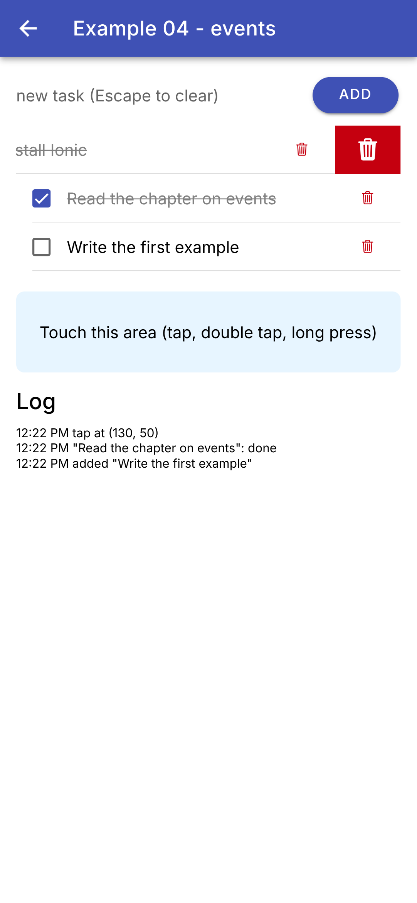
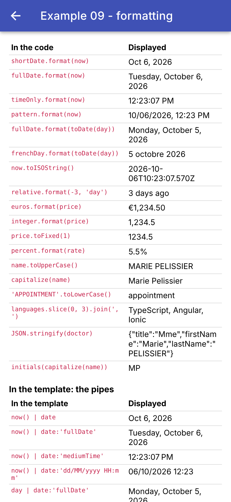

3. Erste Schritte mit Ionic
3.1. Beispiel 01: Die Struktur einer Ionic-Anwendung
3.1.1. Das Projekt
Eine [Ionic]-Anwendung, die mit [Angular] erstellt wurde, ist zunächst eine gewöhnliche [Angular]-Anwendung: Sie wird mit dem Kommandozeilenwerkzeug [Angular] [ng] erstellt, und anschließend werden ihr die Komponenten von [Ionic] und [Capacitor] hinzugefügt; dieses Werkzeug verwandelt sie in eine [Android]-Anwendung:
| npm install -g @angular/cli
ng new examples_ionic --style=scss --skip-tests --ssr=false
cd examples_ionic
npm install @ionic/angular ionicons @capacitor/core @capacitor/android @capacitor/preferences
npm install -D @capacitor/cli
npx cap init "Ionic Examples" fr.stahe.examples --web-dir dist/examples_ionic/browser
|
- Zeile 1: Installiert [Angular CLI], den Befehl [ng], für den gesamten Computer ([-g], „global“);
- Zeile 2: erstellt das Projekt [examples_ionic]: eine vollständige [Angular]-Anwendung, startbereit. [--style=scss]: Die Stylesheets werden in [SCSS] geschrieben, einem um Variablen und Verschachtelung erweiterten CSS; [--skip-tests]: keine Unit-Test-Dateien; [--ssr=false]: kein Server-Side-Rendering, das für eine mobile Anwendung unnötig ist;
- Zeile 4: die Pakete für [Ionic] (seine Komponenten für [Angular] und seine Icon-Schrift [ionicons]) und die für [Capacitor] (sein Kern, die Plattform [Android] und der Schlüssel-Wert-Speicher auf dem Gerät, der ab Beispiel 20 verwendet wird);
- Zeile 5: das Kommandozeilenwerkzeug für [Capacitor], der Befehl [cap], der nur für die Entwicklung verwendet wird ([-D]);
- Zeile 6: schreibt die Datei [capacitor.config.ts]: den Namen der Anwendung und ihre Kennung (das Präfix [fr.stahe], wie ein Domainname umgekehrt, gefolgt vom Anwendungsnamen; zwei auf demselben Smartphone installierte Anwendungen müssen unterschiedliche Kennungen haben) sowie den Ordner, in dem [ng build] die kompilierte Anwendung ablegt.
Das Beispielprojekt wurde auf diese Weise erstellt, und anschließend wurde sein Ordner [src/app] von Hand befüllt, um fünfundzwanzig Beispiele in einer einzigen Anwendung zu vereinen: eine Startseite (das Beispielmenü) und eine Seite pro Beispiel. So teilen sie sich dieselben Pakete, die nur einmal heruntergeladen werden. Seine Verzeichnisstruktur:
| examples_ionic
├── angular.json the Angular project configuration
├── capacitor.config.ts the Capacitor configuration
├── package.json the packages and the scripts of the project
├── package-lock.json the exact versions of the installed packages
├── proxy.conf.json the relay to the JSON server (examples 22 to 25)
├── tsconfig.json the TypeScript configuration
├── tsconfig.app.json
├── captures/ the scripts that make the screenshots of the course
├── node_modules/ the installed packages (npm install)
├── public/ files delivered as is (icon, images, dictionaries)
├── android/ the Android Studio project (after npx cap add android)
└── src/
├── index.html the page that hosts the application
├── main.ts the entry point
├── styles.scss the styles of the whole application
└── app/
├── app.ts the root component
├── back-button.ts Android's Back button
├── app.routes.ts the routes: one address per example
├── examples.ts the list of the 25 examples
├── home/ the menu of the examples
│ ├── home.page.ts
│ └── home.page.html
├── common/ the code shared by examples 22 to 25
├── ex01-first-application/
│ ├── ex01.page.ts
│ └── ex01.page.html
├── ex02-state/
│ ├── ex02.page.ts
│ └── ex02.page.html
└── ...
|
Jedes Beispiel hat seinen eigenen Ordner [src/app/exNN-short-name]. Eine Seite besteht aus zwei Dateien: einer [TypeScript] -Klasse ([exNN.page.ts]) und ihrem [HTML] -Template ([exNN.page.html]).
3.1.2. Die Datei package.json
Die Datei [package.json] beschreibt das Projekt für [npm], den Paketmanager von [Node.js]: seinen Namen, seine Skripte und die benötigten Pakete.
| {
"name": "examples-ionic",
"version": "0.0.0",
"scripts": {
"ng": "ng",
"start": "ng serve",
"build": "ng build",
"watch": "ng build --watch --configuration development",
"android": "ng build && cap sync android && cap run android",
"captures": "node captures/captures.mjs"
},
"private": true,
"packageManager": "npm@10.9.4",
"dependencies": {
"@angular/common": "^22.2.0",
"@angular/compiler": "^22.2.0",
"@angular/core": "^22.2.0",
"@angular/forms": "^22.2.0",
"@angular/platform-browser": "^22.2.0",
"@angular/router": "^22.2.0",
"@capacitor/android": "^8.5.2",
"@capacitor/app": "^8.1.2",
"@capacitor/core": "^8.5.2",
"@capacitor/preferences": "^8.0.1",
"@ionic/angular": "^9.0.6",
"ionicons": "^8.1.0",
"rxjs": "~7.8.0",
"tslib": "^2.3.0"
},
"devDependencies": {
"@angular/build": "^22.2.1",
"@angular/cli": "^22.2.1",
"@angular/compiler-cli": "^22.2.0",
"@capacitor/cli": "^8.5.2",
"playwright": "^1.56.1",
"prettier": "^3.8.1",
"typescript": "~6.0.2"
}
}
|
- Zeilen 2–3: Name und Version des Projekts;
- Zeilen 4–11: die Skripte, die mit [npm run name] gestartet werden (oder mit [npm start] für das Skript [start]): [npm start] startet [ng serve], den Entwicklungsserver; [npm run build] startet [ng build], das die bereitzustellende Anwendung erstellt; [npm run android] führt die Kompilierung durch, kopiert die Anwendung in das [Android]-Projekt und startet sie auf dem Smartphone (siehe „Ausführung“); [npm run captures] erzeugt die Screenshots für diesen Kurs;
- Zeile 12: [private]: Dieses Projekt ist keine Bibliothek; es wird nie im Repository von [npm] veröffentlicht;
- Zeilen 14–29: die von der Anwendung benötigten Pakete, die mit ihr ausgeliefert werden. Die Pakete [@angular/...] sind Bestandteile des Frameworks [Angular]: [core] (Komponenten, Signals, Dependency Injection), [common] (Pipes, der HTTP-Client), [forms] (Formulare), [router] (der Router), [platform-browser] (Rendering im Browser), [compiler] (der Template-Compiler). Danach folgen [Capacitor] und seine Plugins [app] (die Zurück-Taste von [Android], siehe unten) und [preferences] (der Speicher des Geräts, siehe Beispiel 20), [@ionic/angular] (die Komponenten von [Ionic]), [ionicons] (seine Icons), [rxjs] (asynchrone Datenströme, siehe Beispiel 19) und [tslib] (kleine Funktionen, die vom kompilierten Code verwendet werden);
- Zeilen 30–38: Pakete, die ausschließlich für die Entwicklung verwendet werden: [@angular/build] (der Anwendungs-Compiler, aufbauend auf [esbuild] und [Vite]), [@angular/cli] (der Befehl [ng]), [@capacitor/cli] (der Befehl [cap]), [typescript], [prettier] (automatische Code-Formatierung) und [playwright] (Browsersteuerung für Screenshots).
Das Präfix [^] vor einer Version ([^22.2.0]) akzeptiert jede neuere Version derselben Hauptversion (22.3.0, aber nicht 23.0.0); das Präfix [~] ([~6.0.2]) akzeptiert nur Patch-Versionen (6.0.3, aber nicht 6.1.0). Der Befehl [npm install] lädt die Pakete in den Ordner [node_modules] herunter und schreibt die exakt gewählten Versionen in die Datei [package-lock.json]. Um ein Paket hinzuzufügen, geben Sie [npm install package-name] ein: Der Befehl installiert es und fügt seine Zeile in [package.json] ein.
3.1.3. Die Datei angular.json
Die Datei [angular.json] teilt [Angular CLI] mit, wie die Anwendung kompiliert und bereitgestellt wird. Die Zeilen 14–36 (nicht gezeigt) konfigurieren die vom Befehl [ng generate] erzeugten Dateien (Styles in [SCSS], keine Tests). Der Rest:
| "root": "",
"sourceRoot": "src",
"prefix": "app",
"architect": {
"build": {
"builder": "@angular/build:application",
"options": {
"browser": "src/main.ts",
"tsConfig": "tsconfig.app.json",
"inlineStyleLanguage": "scss",
"assets": [
{
"glob": "**/*",
"input": "public"
}
],
"styles": [
"src/styles.scss"
]
},
"configurations": {
"production": {
"budgets": [
{
"type": "initial",
"maximumWarning": "2MB",
"maximumError": "5MB"
},
{
"type": "anyComponentStyle",
"maximumWarning": "8kB",
"maximumError": "16kB"
}
],
"outputHashing": "all"
},
"development": {
"optimization": false,
"extractLicenses": false,
"sourceMap": true
}
},
"defaultConfiguration": "production"
},
"serve": {
"builder": "@angular/build:dev-server",
"configurations": {
"production": {
"buildTarget": "examples_ionic:build:production"
},
"development": {
"buildTarget": "examples_ionic:build:development"
}
},
"defaultConfiguration": "development",
"options": {
"proxyConfig": "proxy.conf.json",
"port": 8100
}
}
|
- Zeilen 38–40: Das Projekt liegt im Stammverzeichnis des Ordners; sein Quellcode befindet sich in [src/]. [prefix]: das Präfix der Komponenten-Tags ([app-root], [app-ex01] ...);
- Zeilen 42–43: die Kompilierung ([ng build]), übernommen vom Builder [@angular/build:application];
- Zeile 45: der Einstiegspunkt der Anwendung, [src/main.ts];
- Zeile 47: Die in den Komponenten selbst geschriebenen Styles sind in [SCSS] verfasst;
- Zeilen 48–53: Der Inhalt des Ordners [public/] wird unverändert in die kompilierte Anwendung kopiert: das Icon [favicon.ico], das Bild [ex03/doctor.svg] aus Beispiel 03 und die Wörterbücher [i18n/] aus den Beispielen 21 und 25;
- Zeilen 54–56: das globale Stylesheet [src/styles.scss];
- Zeilen 59–73: die Konfiguration [production], die für die ausgelieferte Anwendung gilt: Der Code wird optimiert (das ist der Standard), „Budgets“ warnen, wenn die Anwendung zu groß wird, und die Namen der kompilierten Dateien enthalten einen Hash ihres Inhalts ([outputHashing]), damit der Browser keine alte Version zwischenspeichert;
- Zeilen 74–78: die Konfiguration [development]: keine Optimierung und „Source Maps“, mit denen die Entwicklerwerkzeuge des Browsers den ursprünglichen [TypeScript]-Code anzeigen können;
- Zeile 80: [ng build] verwendet die Konfiguration [production]; [ng build --configuration development] verwendet die andere;
- Zeilen 82–97: der Entwicklungsserver ([ng serve]), konfiguriert als [development] (Zeile 92), auf Port 8100 (Zeile 95), mit einer Weiterleitung an den JSON-Server (Zeile 94).
3.1.4. Die Datei proxy.conf.json
| {
"/api": {
"target": "http://localhost:8080",
"secure": false,
"changeOrigin": false,
"logLevel": "warn"
}
}
|
Diese Datei wird erst ab den Beispielen 22 bis 25 verwendet. Der Entwicklungsserver von [Angular] leitet jede Anfrage, deren Adresse mit [/api] beginnt, an den JSON-Server von [RdvMedecins] ([http://localhost:8080]) weiter. Für den Browser, die Anwendung und die API ist der Origin dann derselbe ([http://localhost:8100]): keine CORS-Prüfung, und das Sitzungs-Cookie wird ohne besondere Konfiguration akzeptiert. Diese Beispiele greifen diesen Punkt wieder auf.
3.1.5. Die Datei capacitor.config.ts
| // =========================================================================
// capacitor.config.ts - die Capacitor-Konfiguration
// -------------------------------------------------------------------------
// Capacitor macht aus der Webanwendung (dem von ng build erzeugten Ordner)
// eine Android-Anwendung: Es verpackt sie in ein Android-Studio-Projekt
// (Ordner android/), in dem sie von einer "WebView" angezeigt wird, der Engine
// des Chrome-Browsers des Telefons. Befehle (siehe Beispiel 01, "Ausführen"):
// npx cap add android (nur einmal: erzeugt den Ordner android/)
// ng build (erstellt die Webanwendung)
// npx cap sync android (kopiert sie in das Android-Projekt)
// npx cap run android (startet sie auf einem Emulator oder Telefon)
// =========================================================================
import type { CapacitorConfig } from '@capacitor/cli';
const config: CapacitorConfig = {
// die eindeutige Kennung der Anwendung auf dem Telefon (und im Play Store)
appId: 'fr.stahe.examples',
// der unter dem Symbol angezeigte Name
appName: 'Ionic Examples',
// der Ordner der kompilierten Webanwendung (ng build)
webDir: 'dist/examples_ionic/browser',
server: {
// erlaubt unverschlüsselte HTTP-Anfragen (http://10.0.2.2:8080) an
// den JSON-Server der Entwicklung (Beispiele 22 bis 25)
cleartext: true,
},
plugins: {
// CapacitorHttp: Die HTTP-Anfragen der Anwendung werden nicht mehr von
// der WebView gestellt, sondern vom nativen Android-Code. Folgen (siehe
// Beispiele 22 und 23): keine CORS-Prüfung (der JSON-Server muss nichts
// erlauben), und die Cookies (das des Authentifizierungs-Tokens) werden
// von Android gespeichert und automatisch zurückgesendet
CapacitorHttp: {
enabled: true,
},
},
};
export default config;
|
- Zeile 18: die Anwendungs-ID auf dem Smartphone, [fr.stahe.examples];
- Zeile 20: ihr Name, der unter ihrem Symbol angezeigt wird;
- Zeile 22: der Ordner der kompilierten Webanwendung, die [Capacitor] in das [Android]-Projekt kopiert;
- Zeilen 23–27: Standardmäßig lehnt [Android] unverschlüsselte HTTP-Anfragen ab; sie werden erlaubt, um sich mit dem JSON-Entwicklungsserver verbinden zu können (Beispiele 22–25);
- Zeilen 28–37: Die HTTP-Anfragen werden vom nativen Code von [Android] statt vom integrierten Browser ausgeführt. Auch hier erklären die Beispiele 22 und 23 den Grund.
Dies ist der wesentliche architektonische Unterschied zu [Flutter]: Eine [Ionic]-Anwendung ist eine **Web**anwendung (HTML, CSS, JavaScript), die [Capacitor] in eine [Android]-Anwendung verpackt. Diese Anwendung zeigt lediglich eine „WebView“ an – die Browser-Engine [Chrome] des Smartphones im Vollbildmodus –, die die mitgelieferte Webanwendung lädt. [Capacitor] gibt dem JavaScript-Code außerdem über Plugins Zugriff auf die Funktionen des Smartphones (Speicher, Kamera, Benachrichtigungen usw.). [Flutter] hingegen stellt jedes Pixel des Bildschirms mit seiner eigenen Engine dar.
3.1.6. Die Datei tsconfig.json
| /* Weitere Informationen zur TypeScript-Konfigurationsdatei: https://www.typescriptlang.org/docs/handbook/tsconfig-json.html. */
/* Weitere Informationen zu den Angular-Compiler-Optionen: https://angular.dev/reference/configs/angular-compiler-options. */
{
"compileOnSave": false,
"compilerOptions": {
"strict": true,
"noImplicitOverride": true,
"noPropertyAccessFromIndexSignature": true,
"noImplicitReturns": true,
"noFallthroughCasesInSwitch": true,
"skipLibCheck": true,
"isolatedModules": true,
"experimentalDecorators": true,
"importHelpers": true,
"target": "ES2022",
"module": "preserve"
},
"angularCompilerOptions": {
"enableI18nLegacyMessageIdFormat": false,
"strictInjectionParameters": true,
"strictInputAccessModifiers": true,
"strictTemplates": true
},
"files": [],
"references": [
{
"path": "./tsconfig.app.json"
}
]
}
|
Die Einstellungen des [TypeScript]-Compilers. Beachten Sie Folgendes:
- Zeile 6: [strict]: die strengste Typisierung. Eine Variable vom Typ [string] darf nicht [null] enthalten; ein Parameter muss einen Typ haben usw.;
- Zeile 8: Auf eine Eigenschaft eines „Wörterbuch“-Objekts (vom Typ [{ [key: string]: value }]) wird mit eckigen Klammern zugegriffen: [errors['required']], not [errors.required] (siehe Beispiel 08);
- Zeilen 9–10: Eine Funktion muss in jedem Fall einen Wert zurückgeben; ein [case] eines [switch] darf nicht in den nächsten „durchfallen“;
- Zeile 22: [strictTemplates]: [HTML]-Templates werden mit derselben Strenge geprüft wie der [TypeScript]-Code: Eine falsch geschriebene Eigenschaft oder ein Argument des falschen Typs sind Kompilierungsfehler (siehe Beispiel 06).
3.1.7. Die Seite src/index.html
| <!doctype html>
<html lang="en">
<head>
<meta charset="utf-8">
<title>Ionic Examples</title>
<base href="/">
<!-- viewport-fit=cover: Die Anwendung füllt den ganzen Bildschirm des Telefons, Notch eingeschlossen;
user-scalable=no: kein Zwei-Finger-Zoom, wie in einer nativen Anwendung -->
<meta name="viewport" content="viewport-fit=cover, width=device-width, initial-scale=1.0, minimum-scale=1.0, maximum-scale=1.0, user-scalable=no">
<meta name="color-scheme" content="light dark">
<link rel="icon" type="image/x-icon" href="favicon.ico">
</head>
<body>
<app-root></app-root>
</body>
</html>
|
Die Webanwendung besteht aus dieser einzigen Seite, die der Browser (oder die WebView des Smartphones) beim Start lädt:
- Zeile 2: die Sprache der Seite, Englisch;
- Zeile 6: die Basis-URL der Anwendung; die URLs der Seiten ([/ex01], [/ex02] ...) sind relativ zum Stammverzeichnis;
- Zeile 9: Die Seite nimmt die volle Breite des Bildschirms ein, ohne Zoom – das ist das Verhalten einer App, nicht einer Website;
- Zeile 14: das leere Tag [app-root]: [Angular] fügt dort die Wurzelkomponente der Anwendung ein.
3.1.8. Der Einstiegspunkt: src/main.ts
| // =========================================================================
// src/main.ts - der Einstiegspunkt der Anwendung
// -------------------------------------------------------------------------
// Eine Angular-Anwendung startet mit bootstrapApplication: Angular erzeugt
// die ROOT-Komponente (App) und fügt sie in das Tag <app-root> der
// Seite index.html ein. Der zweite Parameter liefert die "providers"
// der gesamten Anwendung: Ionic, den Router, den HTTP-Client, die Sprache.
// =========================================================================
import { registerLocaleData } from '@angular/common';
import { provideHttpClient } from '@angular/common/http';
import localeFr from '@angular/common/locales/fr';
import { LOCALE_ID } from '@angular/core';
import { bootstrapApplication } from '@angular/platform-browser';
import { provideRouter, withComponentInputBinding } from '@angular/router';
import { provideIonicAngular } from '@ionic/angular';
import { App } from './app/app';
import { routes } from './app/app.routes';
// die französischen Formatierungsregeln (Datum, Zahlen, Beträge) der
// "Pipes" von Angular, für die zweite Sprache der Beispiele 09 und 21 (en-US ist eingebaut)
registerLocaleData(localeFr);
bootstrapApplication(App, {
providers: [
// Ionic: Modus 'md' (Material Design) = das Aussehen von Android, auch im
// Browser eines Computers (sonst übernimmt Ionic auf einem iPhone das iOS-Aussehen)
provideIonicAngular({ mode: 'md' }),
// der Router: die Liste der Routen (app.routes.ts);
// withComponentInputBinding: Die Parameter einer Route werden an die
// Inputs (input) der Komponente der Seite übergeben (siehe Beispiel 17)
provideRouter(routes, withComponentInputBinding()),
// der HTTP-Client von Angular (Beispiele 22 bis 25)
provideHttpClient(),
// die Sprache der Anwendung: (amerikanisches) Englisch
{ provide: LOCALE_ID, useValue: 'en-US' },
],
}).catch((err) => console.error(err));
|
- Zeile 22: französische Formatierungsregeln für Datums- und Zahlenangaben, für die „Pipes“ von [Angular], die in den Beispielen 09 und 21 als zweite Sprache verwendet werden ([en-US] ist eingebaut);
- Zeile 24: [bootstrapApplication] startet [Angular]: Es erzeugt die Wurzelkomponente [App] und fügt sie in das Tag [app-root] von [index.html] ein. Der zweite Parameter legt die „Provider“ ([providers]) für die gesamte Anwendung fest: die Services, die die Dependency Injection (Beispiel 14) den Komponenten bereitstellt, die sie anfordern;
- Zeile 28: [Ionic] im Modus [md] ([Material Design], das Erscheinungsbild von [Android]). Ohne diese Einstellung würde [Ionic] auf einem iPhone das Erscheinungsbild von [iOS] annehmen und anderswo das von [Material Design] ;
- Zeile 32: der Router von [Angular] und seine Routen (die Datei [app.routes.ts]). Der Router ordnet jeder Adresse eine Seite zu;
- Zeile 34: der HTTP-Client für [Angular] (Beispiele 22 bis 25);
- Zeile 36: die Sprache der Anwendung, [en-US] (amerikanisches Englisch), für die Formatierung von Datums- und Zahlenangaben.
Ein Hinweis zu dem, was **nicht** in dieser Datei steht: [zone.js]. Bis einschließlich Version 20 lud eine [Angular]-Anwendung diese Bibliothek, die den gesamten asynchronen Code (Ereignisse, Timer, Anfragen) überwachte, um zu bestimmen, wann der Bildschirm zu aktualisieren ist. Ab Version 21 kommt eine neue „zoneless“-Anwendung ohne sie aus: [Angular] aktualisiert den Bildschirm, wenn sich ein von einem Template gelesenes **Signal** ändert, sowie nach jedem von einem Template behandelten Ereignis (ein Tipp, ein Tastenanschlag). So funktionieren alle Beispiele dieses Kurses, und das ist der Grund, warum ihre veränderlichen Daten Signals sind.
3.1.9. Styles: src/styles.scss
| // =========================================================================
// src/styles.scss - die Stile der gesamten Anwendung
// -------------------------------------------------------------------------
// die Stylesheets von Ionic: Ohne sie haben seine Komponenten nicht
// ihr Aussehen. core.css ist unverzichtbar; die anderen sind Hilfsklassen
// (Abstände, Ausrichtungen, die Klassen ion-padding, ion-text-center ...).
// =========================================================================
@use '@ionic/angular/css/core.css';
@use '@ionic/angular/css/normalize.css';
@use '@ionic/angular/css/structure.css';
@use '@ionic/angular/css/typography.css';
@use '@ionic/angular/css/padding.css';
@use '@ionic/angular/css/float-elements.css';
@use '@ionic/angular/css/text-alignment.css';
@use '@ionic/angular/css/text-transformation.css';
@use '@ionic/angular/css/flex-utils.css';
@use '@ionic/angular/css/display.css';
// das dunkle Theme von Ionic, aktiviert durch die CSS-Klasse ion-palette-dark
// am Tag <html> (siehe Beispiel 20)
@use '@ionic/angular/css/palettes/dark.class.css';
// die Hauptfarbe der Anwendung (Schaltflächen, obere Leiste): ein Indigo,
// wie in den Flutter-Beispielen. Aus --ion-color-primary leitet Ionic die
// hellere (tint) und die dunklere (shade) Variante ab
:root {
--ion-color-primary: #3f51b5;
--ion-color-primary-rgb: 63, 81, 181;
--ion-color-primary-contrast: #ffffff;
--ion-color-primary-contrast-rgb: 255, 255, 255;
--ion-color-primary-shade: #37479f;
--ion-color-primary-tint: #5262bc;
}
|
- Zeilen 9–18: die Stylesheets von [Ionic]: [core.css] ist unverzichtbar; die anderen stellen Hilfsklassen bereit ([ion-padding], [ion-text-center], [ion-margin-top] ...);
- Zeile 22: das dunkle Design, aktiviert über die CSS-Klasse (Beispiel 20);
- Zeilen 27–34: die Primärfarbe der Anwendung ([primary]), ein Indigo, wie in den Beispielen von [Flutter]. Die Komponenten von [Ionic] haben eine Eigenschaft [color] ([color="primary"], [color="danger"], [color="success"] ...), die sich aus dieser Palette bedient.
3.1.10. Die Wurzelkomponente: src/app/app.ts
| // =========================================================================
// src/app/app.ts - die ROOT-Komponente der Anwendung
// -------------------------------------------------------------------------
// Sie enthält nur zwei Ionic-Komponenten:
// - <ion-app>: der Container jeder Ionic-Anwendung;
// - <ion-router-outlet>: die Stelle, an der der Router die Seite der
// aktuellen Adresse anzeigt. Die von Ionic (und nicht das <router-outlet> von Angular)
// animiert den Übergang von einer Seite zur anderen und behält die vorherigen
// Seiten im Speicher: Die Zurück-Taste des Telefons führt zu ihnen zurück, ohne sie neu zu erzeugen.
// Ihr Konstruktor verdrahtet die Zurück-Taste von Android (siehe back-button.ts).
// =========================================================================
import { Component } from '@angular/core';
import { IonApp, IonRouterOutlet } from '@ionic/angular';
import { handleBackButton } from './back-button';
@Component({
selector: 'app-root',
imports: [IonApp, IonRouterOutlet],
template: `
<ion-app>
<ion-router-outlet />
</ion-app>
`,
})
export class App {
constructor() {
handleBackButton();
}
}
|
- Zeile 14: Die Komponenten von [Ionic] werden aus dem Paket [@ionic/angular] importiert. Jede ist eine [TypeScript]-Klasse: [IonApp] für das Tag [<ion-app>], [IonRouterOutlet] für [<ion-router-outlet>] und so weiter;
- Zeilen 17–25: Eine [Angular]-Komponente ist eine Klasse, die mit [@Component] dekoriert ist. Der Dekorator liefert den Namen ihres Tags ([selector]), die von ihrem Template verwendeten Komponenten ([imports]: Eine Komponente kennt nur, was sie importiert) und ihr Template, das direkt im Dekorator geschrieben ist ([template]);
- Zeile 21: [<ion-app>], der Container der gesamten Anwendung [Ionic];
- Zeile 22: [<ion-router-outlet>], die Stelle, an der der Router die Seite der aktuellen Adresse anzeigt. Dies ist der von [Ionic], nicht das [<router-outlet>] von [Angular]: Er verwaltet die Navigation zwischen Seiten, so wie [Android] es tut, und hält die vorherigen Seiten im Speicher;
- Zeilen 26–30: Die Klasse selbst hat weder eigene Daten noch eigenes Verhalten. Ihr Konstruktor, der nur einmal beim Start ausgeführt wird, verbindet die Zurück-Taste von [Android] (Zeile 28).
Ein [Android]-Smartphone hat eine Zurück-Taste (oder -Geste). In einer [Flutter]-App funktioniert sie von selbst: Sie schließt das geöffnete Fenster, kehrt zum vorherigen Bildschirm zurück und beendet die App vom ersten Bildschirm aus. In einer [Ionic]-App empfängt [Capacitor] das Zurück-Ereignis; findet es niemanden, der es behandelt, geht es einfach im Verlauf der WebView zurück und schließt die App, wenn dieser Verlauf leer ist. [Ionic] wird darüber nicht benachrichtigt: Ein geöffnetes Fenster (Beispiel 16) schließt sich nicht, und Sie können die Anwendung von einer anderen Seite als dem Menü aus verlassen. Sie müssen sie daher mit dem Plugin [@capacitor/app] verbinden:
| // =========================================================================
// src/app/back-button.ts - die Zurück-Taste von Android
// -------------------------------------------------------------------------
// Auf dem Telefon empfängt Capacitor das Drücken der Zurück-Taste. Hat es
// für dieses Ereignis keinen Listener, geht es einfach im Verlauf
// der WebView zurück und schließt dann die Anwendung: Ionic weiß nichts
// davon (ein offener Dialog wird nicht geschlossen, das Seitenmenü ebenso wenig).
// Das Plugin @capacitor/app erlaubt es uns, es zu abonnieren: Sobald es einen
// Listener gibt, reicht Capacitor das Drücken an Ionic weiter, das den Handler
// mit der höchsten Priorität aufruft:
// - 100: ein offener Dialog (alert, ion-modal ...) wird geschlossen;
// - 99: das offene Seitenmenü wird geschlossen;
// - 1: (unser Handler) wir gehen zum vorherigen Bildschirm zurück; gibt es keinen,
// beenden wir die Anwendung.
// Im Browser gibt es keine Zurück-Taste: Wir tun nichts.
// =========================================================================
import { inject } from '@angular/core';
import { NavController, Platform } from '@ionic/angular';
import { App as CapacitorApp } from '@capacitor/app';
import { Capacitor } from '@capacitor/core';
// im Konstruktor der Root-Komponente aufzurufen (Injektionskontext)
export function handleBackButton(): void {
if (!Capacitor.isNativePlatform()) return;
const navigation = inject(NavController);
// ein (leerer) Listener: Capacitor reicht das Drücken nun an Ionic weiter
void CapacitorApp.addListener('backButton', () => {});
inject(Platform).backButton.subscribeWithPriority(1, async () => {
// pop(): zurück zum vorherigen Bildschirm des Stacks von Ionic; false: der
// Stack enthält nur den angezeigten Bildschirm, dahinter ist nichts mehr
if (!(await navigation.pop())) {
await CapacitorApp.exitApp();
}
});
}
|
- Zeile 20: das Plugin [App] von [Capacitor] (installiert mit [npm install @capacitor/app]). Es heißt [App], wie die Wurzelkomponente: Beim Import wird es umbenannt ([as CapacitorApp]), um Verwechslungen zu vermeiden;
- Zeile 24: eine gewöhnliche Funktion, die vom Konstruktor der Wurzelkomponente aufgerufen wird. Sie verwendet [inject]: Sie kann nur dort aufgerufen werden, wo [Angular] Services bereitstellen kann (ein Konstruktor, die Initialisierung von Eigenschaften), dem „Injektionskontext“;
- Zeile 25: In einem Browser ([ng serve]) gibt es keine Zurück-Taste: Es wird nichts unternommen. [Capacitor.isNativePlatform()] ergibt [true] in der [Android]-Anwendung;
- Zeile 26: der Service [NavController] von [Ionic]: Er kennt die Seitenstapel von [<ion-router-outlet>];
- Zeile 28: ein Listener für das Ereignis [backButton], der nichts tut. Seine bloße Anwesenheit genügt: Sobald es einen Listener gibt, geht [Capacitor] nicht mehr automatisch im Verlauf zurück und übergibt die Behandlung an [Ionic];
- Zeilen 29–35: [Ionic] erhält die Behandlung und ruft EINEN UND NUR EINEN Handler auf: den mit der höchsten Priorität. Den Fenstern ([AlertController], [ion-modal], die Liste in [ion-select] ...) wird die Priorität 100 zugewiesen, das Dropdown-Menü hat die Priorität 99: Ist eines davon geöffnet, schließt sich dieses. Andernfalls hat unsere Behandlung Vorrang (Priorität 1): [navigation.pop()] kehrt zur vorherigen Seite zurück und liefert [false] , falls es keine gibt; die Anwendung wird dann beendet ([exitApp()]).
In diesem Projekt ist das Menü die einzige Startseite: Die Zurück-Taste führt von einem Beispiel zurück zum Menü und beendet dann die Anwendung.
3.1.12. Die Routen: src/app/app.routes.ts
| // =========================================================================
// src/app/app.routes.ts - die Routen der Beispielanwendung
// -------------------------------------------------------------------------
// Eine Route ordnet eine ADRESSE (path) einer SEITE (einer Komponente) zu. Die
// Startseite ('') ist das Menü der Beispiele; jedes Beispiel hat seine Adresse:
// /ex01, /ex02 ... Der Code eines Beispiels wird erst geladen, wenn wir dorthin gehen
// (loadComponent, loadChildren: "Lazy" Loading, siehe Beispiel 17).
// =========================================================================
import { Routes } from '@angular/router';
export const routes: Routes = [
{ path: '', loadComponent: () => import('./home/home.page').then((m) => m.HomePage) },
{ path: 'ex01', loadComponent: () => import('./ex01-first-application/ex01.page').then((m) => m.Ex01Page) },
{ path: 'ex02', loadComponent: () => import('./ex02-state/ex02.page').then((m) => m.Ex02Page) },
{ path: 'ex03', loadComponent: () => import('./ex03-templates/ex03.page').then((m) => m.Ex03Page) },
{ path: 'ex04', loadComponent: () => import('./ex04-events/ex04.page').then((m) => m.Ex04Page) },
{ path: 'ex05', loadComponent: () => import('./ex05-controlled-fields/ex05.page').then((m) => m.Ex05Page) },
{ path: 'ex06', loadComponent: () => import('./ex06-reducer/ex06.page').then((m) => m.Ex06Page) },
{ path: 'ex07', loadComponent: () => import('./ex07-validation/ex07.page').then((m) => m.Ex07Page) },
{ path: 'ex08', loadComponent: () => import('./ex08-reactive-forms/ex08.page').then((m) => m.Ex08Page) },
{ path: 'ex09', loadComponent: () => import('./ex09-formatting/ex09.page').then((m) => m.Ex09Page) },
{ path: 'ex10', loadComponent: () => import('./ex10-component-inputs/ex10.page').then((m) => m.Ex10Page) },
{ path: 'ex11', loadComponent: () => import('./ex11-lifting-state-up/ex11.page').then((m) => m.Ex11Page) },
{ path: 'ex12', loadComponent: () => import('./ex12-composition/ex12.page').then((m) => m.Ex12Page) },
{ path: 'ex13', loadComponent: () => import('./ex13-lifecycle/ex13.page').then((m) => m.Ex13Page) },
{ path: 'ex14', loadComponent: () => import('./ex14-injection/ex14.page').then((m) => m.Ex14Page) },
{ path: 'ex15', loadComponent: () => import('./ex15-behaviours/ex15.page').then((m) => m.Ex15Page) },
{ path: 'ex16', loadComponent: () => import('./ex16-confirmation/ex16.page').then((m) => m.Ex16Page) },
// die Beispiele 17 und 18 haben eigene Routen, "children" von /ex17 und /ex18
{ path: 'ex17', loadChildren: () => import('./ex17-router/routes').then((m) => m.routes) },
{ path: 'ex18', loadChildren: () => import('./ex18-guards/routes').then((m) => m.routes) },
{ path: 'ex19', loadComponent: () => import('./ex19-asynchronous/ex19.page').then((m) => m.Ex19Page) },
{ path: 'ex20', loadComponent: () => import('./ex20-shared-state/ex20.page').then((m) => m.Ex20Page) },
{ path: 'ex21', loadComponent: () => import('./ex21-i18n/ex21.page').then((m) => m.Ex21Page) },
{ path: 'ex22', loadComponent: () => import('./ex22-http/ex22.page').then((m) => m.Ex22Page) },
{ path: 'ex23', loadComponent: () => import('./ex23-login/ex23.page').then((m) => m.Ex23Page) },
{ path: 'ex24', loadComponent: () => import('./ex24-api-layer/ex24.page').then((m) => m.Ex24Page) },
{ path: 'ex25', loadComponent: () => import('./ex25-server-errors/ex25.page').then((m) => m.Ex25Page) },
// jede andere Adresse führt zurück zum Menü
{ path: '**', redirectTo: '' },
];
|
- Zeile 12: Routen: ein Array von [Route]-Objekten;
- Zeile 13: Die leere URL ([http://localhost:8100/]) zeigt die Startseite [HomePage] an. [loadComponent] enthält eine Funktion, die die Komponentendatei importiert: Diese Datei wird erst geladen, wenn Sie zu dieser Adresse navigieren (Lazy Loading; siehe Beispiel 17). Beim Start lädt die Anwendung also nur das Menü;
- Zeilen 14–29: je eine Route, zum Beispiel: [/ex01], [/ex02] ...;
- Zeilen 31–32: Die Beispiele 17 und 18 haben eigene Routen (Beispiel 17);
- Zeile 41: Jede andere Adresse führt zurück zum Menü.
3.1.13. Liste der Beispiele: src/app/examples.ts
| // =========================================================================
// src/app/examples.ts - die Liste der 25 Beispiele
// -------------------------------------------------------------------------
// Eine einzige Quelle für die Startseite (das Menü der Beispiele). Jedes
// Beispiel hat eine Nummer, einen Titel und ein Kapitel; seine Adresse (/ex01, /ex02 ...)
// wird in app.routes.ts deklariert.
// =========================================================================
export interface Example {
number: string; // '01' ... '25'
title: string;
chapter: string;
}
export const EXAMPLES: Example[] = [
{ number: '01', title: 'a first application', chapter: 'First steps' },
{ number: '02', title: 'state and computed values', chapter: 'First steps' },
{ number: '03', title: 'writing a template', chapter: 'First steps' },
{ number: '04', title: 'events', chapter: 'First steps' },
{ number: '05', title: 'all the field types', chapter: 'First steps' },
{ number: '06', title: 'a form, an object, a reducer', chapter: 'First steps' },
{ number: '07', title: 'validating a form, by hand', chapter: 'First steps' },
{ number: '08', title: 'reactive forms', chapter: 'First steps' },
{ number: '09', title: 'formatting values', chapter: 'First steps' },
{ number: '10', title: 'components and their inputs', chapter: 'Components' },
{ number: '11', title: 'the child notifies its parent', chapter: 'Components' },
{ number: '12', title: 'composition', chapter: 'Components' },
{ number: '13', title: 'the lifecycle of a component', chapter: 'Components' },
{ number: '14', title: 'dependency injection', chapter: 'Components' },
{ number: '15', title: 'reusing behaviours', chapter: 'Components' },
{ number: '16', title: 'a reusable confirmation dialog', chapter: 'Components' },
{ number: '17', title: 'the router', chapter: 'Routing' },
{ number: '18', title: 'navigation guards', chapter: 'Routing' },
{ number: '19', title: 'promises, observables and timers', chapter: 'Asynchrony and shared state' },
{ number: '20', title: 'a shared state', chapter: 'Asynchrony and shared state' },
{ number: '21', title: 'an application in two languages', chapter: 'Internationalization' },
{ number: '22', title: 'a first HTTP request', chapter: 'Talking to the server' },
{ number: '23', title: 'login, cookie and session', chapter: 'Talking to the server' },
{ number: '24', title: 'an API access layer', chapter: 'Talking to the server' },
{ number: '25', title: 'the errors returned by the server', chapter: 'Talking to the server' },
];
|
- Zeilen 9–13: Ein [TypeScript]-Interface beschreibt die Struktur eines Objekts: hier eine Nummer, ein Titel und ein Kapitel – drei Zeichenketten;
- Zeilen 15–41: die 25 Beispiele, ein Array von [Example]-Objekten. Das Schlüsselwort [export] macht die Konstante für andere Dateien sichtbar, die sie über [import { EXAMPLES } from '../examples'] importieren.
3.1.14. Die Startseite
Die Startseite zeigt diese nach Kapiteln gruppierte Tabelle an:
| // =========================================================================
// src/app/home/home.page.ts - das Menü der 25 Beispiele
// -------------------------------------------------------------------------
// Die erste Seite der Anwendung: die Liste der Beispiele, nach
// Kapiteln gruppiert. Ein Tippen auf ein Beispiel öffnet dessen Seite (/ex01, /ex02 ...).
// =========================================================================
import { Component } from '@angular/core';
import { RouterLink } from '@angular/router';
import {
IonContent, IonHeader, IonItem, IonItemDivider, IonItemGroup, IonLabel, IonList, IonTitle, IonToolbar,
} from '@ionic/angular';
import { EXAMPLES, Example } from '../examples';
@Component({
selector: 'app-home',
imports: [RouterLink, IonHeader, IonToolbar, IonTitle, IonContent, IonList, IonItemGroup, IonItemDivider, IonItem, IonLabel],
templateUrl: './home.page.html',
})
export class HomePage {
// die Beispiele, nach Kapiteln gruppiert: [{ chapter, examples: [...] }, ...]
readonly chapters: { chapter: string; examples: Example[] }[] = [];
constructor() {
for (const example of EXAMPLES) {
let group = this.chapters.find((c) => c.chapter === example.chapter);
if (!group) {
group = { chapter: example.chapter, examples: [] };
this.chapters.push(group);
}
group.examples.push(example);
}
}
}
|
- Zeilen 15–19: die Komponente, ihr Tag, ihre Unterkomponenten und ihr Template, das nun in einer separaten Datei abgelegt ist ([templateUrl]);
- Zeile 22: ein Feld der Klasse, das das Template liest: die Liste der Kapitel mit jeweils ihren Beispielen;
- Zeilen 24–33: Der Konstruktor ordnet jedes Beispiel der Gruppe seines Kapitels zu und legt die Gruppe bei Bedarf an.
| <!-- das Menü der Beispiele -->
<ion-header>
<ion-toolbar color="primary">
<ion-title>Ionic Examples</ion-title>
</ion-toolbar>
</ion-header>
<ion-content>
<ion-list>
@for (group of chapters; track group.chapter) {
<ion-item-group>
<ion-item-divider color="light">
<ion-label>{{ group.chapter }}</ion-label>
</ion-item-divider>
@for (example of group.examples; track example.number) {
<!-- routerLink: ein Tippen auf den Eintrag öffnet die Seite des Beispiels;
detail: der kleine Pfeil rechts -->
<ion-item [routerLink]="'/ex' + example.number" detail>
<ion-label>Example {{ example.number }} - {{ example.title }}</ion-label>
</ion-item>
}
</ion-item-group>
}
</ion-list>
</ion-content>
|
- Zeilen 2–6: die obere Leiste: [<ion-header>] enthält eine Symbolleiste, [<ion-toolbar>], in den Farben der Anwendung ([color="primary"]), und ihren Titel, [<ion-title>];
- Zeile 8: [<ion-content>]: der Hauptteil der Seite, der scrollt, wenn er die Bildschirmhöhe überschreitet;
- Zeile 9: [<ion-list>]: eine Liste;
- Zeile 10: [@for] wiederholt seinen Block für jedes Element eines Arrays (siehe Beispiel 03): eine Gruppe pro Kapitel;
- Zeilen 12–14: der Titel der Gruppe, eine Trennlinie ([<ion-item-divider>]);
- Zeile 18: eine Listenzeile ([<ion-item>]), zum Beispiel. [[routerLink]]: Ein Tipp auf die Zeile führt zur URL des Beispiels; [detail]: der kleine Pfeil rechts.

3.1.15. Die Seite von Beispiel 01
Ein Beispiel ist eine Seite – das heißt eine Komponente –, die an ihre Adresse geroutet wird. Die von Beispiel 01:
| // =========================================================================
// src/app/ex01-first-application/ex01.page.ts - eine erste Anwendung
// -------------------------------------------------------------------------
// Eine Ionic-Seite ist eine Angular-KOMPONENTE: eine TypeScript-Klasse, dekoriert
// mit @Component, verbunden mit einem HTML-TEMPLATE, das beschreibt, was
// sie anzeigt. Das Template mischt gewöhnliche HTML-Tags, Ionic-Komponenten
// (<ion-button>, <ion-card> ...) und {{ ... }}-Ausdrücke,
// die die Daten der Klasse anzeigen.
// Die Daten, die sich ändern, sind SIGNALS: Ändert sich der Wert eines Signals,
// aktualisiert Angular auf dem Bildschirm, was ihn anzeigt.
// =========================================================================
import { Component, signal } from '@angular/core';
import {
IonBackButton, IonButton, IonButtons, IonContent, IonHeader, IonText, IonTitle, IonToolbar,
} from '@ionic/angular';
// "gewöhnliche" Daten außerhalb der Komponente: Sie ändern sich nie
const title = 'Welcome to Ionic';
const languages = ['TypeScript', 'Angular', 'Ionic'];
// "12:05:09": die aktuelle Uhrzeit, zweistellig
function currentTime(): string {
const d = new Date();
const twoDigits = (n: number) => n.toString().padStart(2, '0');
return `${twoDigits(d.getHours())}:${twoDigits(d.getMinutes())}:${twoDigits(d.getSeconds())}`;
}
@Component({
// der Name des Tags der Komponente (<app-ex01>): Der Router fügt es
// selbst ein, wir schreiben es nie
selector: 'app-ex01',
// die vom Template verwendeten Ionic-Komponenten: Eine Komponente
// kennt nur, was sie importiert
imports: [IonHeader, IonToolbar, IonButtons, IonBackButton, IonTitle, IonContent, IonButton, IonText],
// das Template in einer separaten Datei
templateUrl: './ex01.page.html',
})
export class Ex01Page {
// vom Template gelesene Daten: einfache Felder der Klasse
readonly title = title;
readonly languages = languages;
// der ZUSTAND: Signals. signal(0) erzeugt ein Signal mit dem Anfangswert 0;
// seinen Wert lesen wir, indem wir es wie eine Funktion aufrufen: counter()
readonly counter = signal(0);
readonly time = signal(currentTime());
// die von der Schaltfläche aufgerufene Methode
increment(): void {
// set: der neue Wert; update: der neue Wert, berechnet aus
// dem alten. Angular aktualisiert dann den Bildschirm: Wir
// ändern ihn nie selbst
this.counter.update((n) => n + 1);
this.time.set(currentTime());
}
}
|
- Zeile 13: [Component] (der Komponenten-Dekorator) und [signal] stammen aus dem Kern von [Angular];
- Zeilen 14–16: die vom Template verwendeten Komponenten von [Ionic] ;
- Zeilen 19–20: zwei gewöhnliche Datenwerte, die außerhalb der Komponente deklariert sind: Sie ändern sich nie. [const]: eine Variable, der nur einmal ein Wert zugewiesen wird;
- Zeilen 23–27: eine gewöhnliche Funktion, die die aktuelle Uhrzeit im Format „12:05:09“ zurückgibt. Sie enthält eine kleine Pfeilfunktion, [twoDigits]. [
...${expression}...] ist ein String-Template: Der Wert jedes Ausdrucks wird darin eingefügt;
- Zeilen 29–38: der Dekorator [@Component]: das Tag der Komponente (Zeile 32, das der Router selbst einfügt: Wir schreiben es nie), die von ihrem Template verwendeten Komponenten von [Ionic] (Zeile 35) und die Datei, die ihr Template enthält (Zeile 37);
- Zeile 39: die Klasse der Komponente. [export]: Die Routendatei importiert sie;
- Zeilen 41–42: zwei Felder der Klasse, die das Template liest. [readonly]: Sie werden nicht neu zugewiesen;
- Zeilen 46–47: der **Zustand** der Komponente, die sich ändernden Daten: zwei **Signals**. [signal(0)] erzeugt ein Signal mit dem Anfangswert 0, dessen Typ ([number]) aus diesem Wert abgeleitet wird. Den Wert eines Signals lesen Sie, indem Sie es als Funktion aufrufen: [counter()];
- Zeilen 50–56: die von der Schaltfläche aufgerufene Methode. Sie interagiert nicht mit dem Bildschirm, sondern ändert den Zustand. [update] berechnet den neuen Wert anhand des alten (Zeile 54), und [set] setzt ihn direkt (Zeile 55). [Angular] weiß dann, dass die Teile des Bildschirms, die diese Signals lesen, neu gezeichnet werden müssen, und zeichnet sie neu.
Das Template:
| <!-- ======================================================================
ex01.page.html - das Template der Seite von Beispiel 01
====================================================================== -->
<!-- ion-header: die obere Leiste, mit einer Zurück-Schaltfläche und einem Titel -->
<ion-header>
<ion-toolbar color="primary">
<ion-buttons slot="start">
<!-- der Zurück-Button: er führt zum Menü der Beispiele zurück (defaultHref),
wenn wir direkt auf dieser Seite gelandet sind -->
<ion-back-button defaultHref="/" />
</ion-buttons>
<ion-title>Example 01 - a first application</ion-title>
</ion-toolbar>
</ion-header>
<!-- ion-content: der Hauptteil der Seite, der bei Bedarf scrollt;
ion-padding: ein Rand ringsherum -->
<ion-content class="ion-padding">
<h2>{{ title }}</h2>
<p>This screen is built by Ionic and Angular, from the Ex01Page component and its template.</p>
<!-- {{ expression }}: der Wert eines TypeScript-Ausdrucks, in den Text eingefügt -->
<p>It is written in {{ languages.join(', ') }} ({{ languages.length }} languages).</p>
<!-- (click): die Methode, die beim Drücken der Schaltfläche aufgerufen wird (siehe Beispiel 04) -->
<ion-button (click)="increment()">Click me</ion-button>
<p>
<!-- counter(): Wir LESEN ein Signal, indem wir es aufrufen -->
<ion-text color="primary">
<strong>You clicked {{ counter() }} times (last click: {{ time() }}).</strong>
</ion-text>
</p>
</ion-content>
|
- Zeilen 6–15: die obere Leiste. [<ion-buttons slot="start">] platziert Schaltflächen am Anfang der Leiste (links): eine Zurück-Schaltfläche, [<ion-back-button>], die zur vorherigen Seite zurückführt. Gibt es keine (Sie haben die Adresse direkt eingegeben, [/ex01]), legt [defaultHref] die Seite fest, zu der navigiert wird: das Menü;
- Zeile 19: der Hauptteil der Seite mit einem Rand ringsum (Klasse [ion-padding]);
- Zeile 20: [{{ title }}]: eine „Interpolation“ – der Wert eines Ausdrucks, der in den Text eingefügt wird. Der Ausdruck wird im Kontext der Klasse ausgewertet: [title] ist das Feld in Zeile 41 der Komponente;
- Zeile 23: Ein Ausdruck kann Methoden aufrufen: [languages.join(', ')], [languages.length];
- Zeile 26: [(click)="increment()"]: Wenn die Schaltfläche gedrückt wird, führt [Angular] die zwischen den Anführungszeichen stehende Anweisung aus. Der Aufruf wird mit Klammern geschrieben: Die Anweisung wird nur ausgeführt, wenn die Schaltfläche gedrückt wird (siehe Beispiel 04);
- Zeilen 30–32: ein Text, der vom Zustand abhängt. [counter()] liest das Signal: Wenn es sich ändert, ändert sich dieser Text. [<ion-text color="primary">] färbt seinen Inhalt ein.
Der Komponentenbaum des Bildschirms, wie ihn die Erweiterung [Angular DevTools] der Entwicklerwerkzeuge von [Chrome] anzeigt (Tab [Angular]), ergänzt um die HTML-Elemente:
| App (app-root)
└── ion-app
└── ion-router-outlet
└── Ex01Page (app-ex01)
├── ion-header
│ └── ion-toolbar
│ ├── ion-buttons
│ │ └── ion-back-button
│ └── ion-title
└── ion-content
├── h2 (the title)
├── p
├── p
├── ion-button
└── p
└── ion-text
└── strong (the counter)
|
Wie bei [Flutter] schreiben wir sehr wenig „Implementierungs“-Code und viel „beschreibenden“ Code. Während [Flutter] den Bildschirm in [Dart] jedoch mit verschachtelten Widget-Konstruktoren beschreibt, trennt [Angular] die beiden: Die [TypeScript]-Klasse enthält die Daten und das Verhalten, während das [HTML]-Template den Bildschirm beschreibt. Die Komponenten von [Ionic] ([<ion-button>], [<ion-toolbar>] ...) sind echte HTML-Elemente, „Web Components“ („Web Components“), die von der Bibliothek [@ionic/core] erstellt werden: Sie funktionieren in jedem Browser, und [@ionic/angular] verpackt sie so, dass [Angular] sie wie seine eigenen Komponenten behandeln kann. Deshalb gibt es dasselbe [Ionic] auch für [React] und [Vue.js].
3.1.16. Ausführung
In der Konsole, die im Ordner [examples_ionic] geöffnet ist (die Pakete wurden einmalig mit [npm install] installiert):
Die Konsole zeigt an:
| > examples-ionic@0.0.0 start
> ng serve
Initial chunk files | Names | Raw size
styles.css | styles | 56.90 kB |
main.js | main | 6.35 kB |
| Initial total | 63.25 kB
Lazy chunk files | Names | Raw size
chunk-QC4MGRJ7.js | home-page | 7.15 kB |
chunk-IMCNE3A4.js | ex01-page | 6.23 kB |
...
Application bundle generation complete. [6.046 seconds]
Watch mode enabled. Watching for file changes...
➜ Local: http://localhost:8100/
|
Die Anwendung wird in wenigen Sekunden kompiliert: eine Datei [main.js], die beim Start geladen wird, und eine kleine Datei pro Seite („Lazy Chunk“), die bei Bedarf geladen wird. Öffnen Sie die URL [http://localhost:8100] in [Chrome]. Um die App in Smartphone-Größe anzuzeigen, öffnen Sie die Entwicklerwerkzeuge (F12) und dann die Geräteemulationsleiste (Strg+Umschalt+M) und wählen Sie ein Smartphone aus der Liste aus (zum Beispiel ein [Pixel 7]) oder geben Sie Abmessungen an (die Screenshots in diesem Tutorial haben 412 x 892 Pixel). Links der Startbildschirm von Beispiel 01, rechts nach zweimaligem Tippen auf die Schaltfläche:
Zwei Experimente zum Ausprobieren:
- Ändern Sie den Text in Zeile 21 von [ex01.page.html] und speichern Sie die Datei: Die Konsole zeigt [Component update sent to client(s)] an, und der Bildschirm ändert sich sofort, wobei der Zähler seinen Wert behält. Das ist ein Hot Reload: Das neue Template ersetzt das alte in der laufenden Anwendung. Eine Änderung am [TypeScript] -Code ([ex01.page.ts]) lädt dagegen die gesamte Seite neu ([Page reload sent to client(s)]): Der Zähler wird auf 0 zurückgesetzt, wie beim „Hot Restart“ von [Flutter];
- Erkunden Sie die Anwendung mit den Entwicklerwerkzeugen: Der Tab [Elements] zeigt die [<ion-...>]-Tags der Seite an, der Tab [Console] zeigt eventuelle Fehler, und der Tab [Sources] zeigt den [TypeScript]-Code (dank „Source Maps“), in dem Sie Haltepunkte setzen können.
Nun zu [Android]. Zuerst müssen Sie das [Android]-Projekt erstellen:
Dieser Befehl erstellt den Ordner [android/]: ein vollständiges [Android Studio]-Projekt, das lediglich die WebView anzeigt und die Webanwendung in sie lädt. An ihm werden selten Änderungen vorgenommen (das Symbol, die Berechtigungen). Bei neueren Versionen von [Android Studio] ist jedoch eine Anpassung nötig: Deren JDK ist ein [Java] 25, das von der von [Gradle] gewählten Version von [Capacitor] 8 (Version 8.14) nicht unterstützt wird. Der Build schlägt dann mit der Fehlermeldung [Unsupported class file major version 69] fehl. Wechseln Sie einfach zu [Gradle] 9.1, indem Sie eine Zeile in der Datei [android/gradle/wrapper/gradle-wrapper.properties] ändern:
| distributionUrl=https\://services.gradle.org/distributions/gradle-9.1.0-all.zip
|
(anstelle von [gradle-8.14.3-all.zip]). Der erste Build lädt diese Version von [Gradle] herunter (etwa 200 MB). Danach, jedes Mal wenn sich die Anwendung geändert hat:
| npx ng build
npx cap sync android
npx cap run android
|
- Zeile 1: erstellt die Webanwendung im Ordner [dist/examples_ionic/browser] (Konfiguration [production]);
- Zeile 2: kopiert sie in das [Android]-Projekt (anhand der Konfiguration aus [capacitor.config.ts] und der Plugins von [Capacitor]);
- Zeile 3: baut die [Android]-Anwendung (mit dem Werkzeug [Gradle]), installiert sie auf einem laufenden Emulator oder einem angeschlossenen Smartphone und startet sie. Stehen mehrere Geräte zur Verfügung, fordert der Befehl Sie auf, eines auszuwählen.
Auf dem Smartphone führt die Zurück-Taste einen Bildschirm zurück zum Menü und beendet vom Menü aus die Anwendung (siehe [back-button.ts]).
Sie können das Projekt auch in [Android Studio] öffnen ([npx cap open android]) und die Anwendung über die Schaltfläche [Run] starten. Der erste Build dauert ein bis zwei Minuten; weitere Builds dauern nur wenige Sekunden. Auf dem Smartphone ist der Bildschirm derselbe wie im Browser, dargestellt von derselben Engine – der von [Chrome]. Auch das Debuggen erfolgt mit denselben Werkzeugen: Die Adresse [chrome://inspect] im [Chrome] des Computers listet die WebViews der Anwendungen auf, die gerade auf dem Emulator laufen, und öffnet deren Entwicklerwerkzeuge.
Dieser Zyklus (kompilieren, kopieren, bauen) unterstützt nicht das Hot Reload von [ng serve]. Um es auf dem Smartphone zu aktivieren, können Sie die App anweisen, ihren Code vom Entwicklungsserver des Computers statt von ihrer eingebetteten Kopie zu laden:
| npx ng serve --host 0.0.0.0
npx cap run android --live-reload --host=192.168.1.20 --port=8100
|
- Zeile 1: Der Entwicklungsserver akzeptiert Verbindungen von anderen Rechnern als dem Computer selbst (standardmäßig lauscht er nur auf [localhost]);
- Zeile 2: [192.168.1.20] ist die Adresse des Computers im lokalen Netzwerk ([ipconfig] unter [Windows] liefert sie). Die installierte Anwendung lädt dann [http://192.168.1.20:8100] und lädt sie bei jeder Änderung neu.
Mit Vorsicht verwenden: Das Smartphone muss mit dem Computer verbunden sein (dasselbe WLAN, Firewall des Computers auf Port 8100 geöffnet), und die so installierte App funktioniert ohne den Entwicklungsserver nicht mehr. Führen Sie nach Abschluss der Arbeit erneut [npx ng build] aus, gefolgt von [npx cap sync android], damit die App wieder ihren eigenen Code einbettet. In diesem Kurs entwickeln wir im Browser und führen dann [Android] zur Überprüfung aus.
3.2. Beispiel 02: Zustand und berechnete Werte
Der Zustand steht im Mittelpunkt von [Angular], ebenso wie von [Flutter] und [React]. Dieses Beispiel berechnet den Preis eines Artikels inklusive Mehrwertsteuer:
| // =========================================================================
// src/app/ex02-state/ex02.page.ts - Zustand und berechnete Werte
// -------------------------------------------------------------------------
// Ein kleiner Preisrechner (inkl. MwSt.):
// - der ZUSTAND: Signals (signal()). Eine Änderung ihres Werts (set, update)
// aktualisiert auf dem Bildschirm, was sie anzeigt;
// - ein aus dem Zustand BERECHNETER Wert ist KEIN Zustand: Er ist ein
// berechnetes Signal (computed()), das neu berechnet wird, wenn sich eines der
// gelesenen Signals ändert. Er ist immer aktuell, ohne etwas zu synchronisieren;
// - eine Information, die von den AUFEINANDERFOLGENDEN Werten des Zustands abhängt (der Verlauf
// der Summen), wird dort aktualisiert, wo sich der Zustand ändert: in der Methode
// change(), über die alle Änderungen laufen;
// - der Titel der Anwendung (Browser-Tab) steht nicht im
// Template: Er ist ein EFFECT (effect()), eine Funktion, die Angular
// jedes Mal erneut ausführt, wenn sich eines der gelesenen Signals ändert.
// =========================================================================
import { Component, computed, DestroyRef, effect, inject, signal } from '@angular/core';
import { Title } from '@angular/platform-browser';
import {
IonBackButton, IonButton, IonButtons, IonCard, IonCardContent, IonCardHeader, IonCardSubtitle, IonCardTitle,
IonContent, IonHeader, IonIcon, IonInput, IonItem, IonLabel, IonList, IonNote, IonSegment, IonSegmentButton,
IonTitle, IonToolbar, SegmentValue,
} from '@ionic/angular';
import { addIcons } from 'ionicons';
import { add, remove } from 'ionicons/icons';
// ein Formatierer für Beträge in Euro im englischen Stil (€1,234.50), siehe Beispiel 09
const euros = new Intl.NumberFormat('en-US', { style: 'currency', currency: 'EUR' });
// die Anfangswerte (Schaltfläche Zurücksetzen)
const LABEL = 'Pen';
const PRICE = '2.5';
@Component({
selector: 'app-ex02',
imports: [
IonHeader, IonToolbar, IonButtons, IonBackButton, IonTitle, IonContent, IonCard, IonCardHeader, IonCardTitle,
IonCardSubtitle, IonCardContent, IonInput, IonButton, IonIcon, IonSegment, IonSegmentButton, IonList, IonItem,
IonLabel, IonNote,
],
templateUrl: './ex02.page.html',
styles: `
.quantity { display: flex; align-items: center; margin: 12px 0 8px; }
.quantity span { flex: 1; }
.quantity strong { font-size: 1.1em; min-width: 1.5em; text-align: center; }
.bold { font-weight: bold; }
ion-note { font-size: 1rem; }
`,
})
export class Ex02Page {
// der Zustand: vier Signals, typisiert durch ihren Anfangswert
// (der Preis wird als TEXT gehalten: so, wie wir ihn eingeben, inklusive Trennzeichen)
readonly label = signal(LABEL);
readonly priceText = signal(PRICE);
readonly quantity = signal(1);
readonly vatRate = signal(20); // in %
// der Verlauf der letzten 5 Änderungen der Summe inkl. MwSt.
readonly history = signal<string[]>([]);
// BERECHNETE Werte: computed() merkt sich das Ergebnis und berechnet
// es nur neu, wenn sich eines der gelesenen Signals geändert hat
readonly priceExclVat = computed(() => Number(this.priceText().replace(',', '.')) || 0);
readonly totalExclVat = computed(() => this.quantity() * this.priceExclVat());
readonly vatAmount = computed(() => (this.totalExclVat() * this.vatRate()) / 100);
readonly totalInclVat = computed(() => this.totalExclVat() + this.vatAmount());
// die Zeilen der Ergebniskarte: DATEN, über die das Template iteriert
readonly lines = computed(() => [
{ label: 'Total excl. VAT', amount: euros.format(this.totalExclVat()), bold: false },
{
label: `VAT (${this.vatRate()} %)`,
amount: euros.format(this.vatAmount()),
bold: false,
},
{ label: 'Total incl. VAT', amount: euros.format(this.totalInclVat()), bold: true },
]);
constructor() {
// die vom Template verwendeten Symbole (<ion-icon name="add" />)
addIcons({ add, remove });
// der Title-Service von Angular ändert den Titel der Seite (den Browser-Tab).
// effect() führt die Funktion jedes Mal erneut aus, wenn sich totalInclVat ändert
const title = inject(Title);
effect(() => title.setTitle(`Incl. VAT: ${euros.format(this.totalInclVat())}`));
// wenn wir die Seite verlassen (die Komponente wird zerstört), stellen wir den Titel der Anwendung wieder her
inject(DestroyRef).onDestroy(() => title.setTitle('Ionic Examples'));
}
// ALLE Änderungen des Zustands laufen über diese Methode: Sie merkt sich die
// Summe inkl. MwSt. vor der Änderung, wendet die Änderung an und ergänzt
// den Verlauf, falls sich die Summe geändert hat
change(apply: () => void): void {
const oldTotal = this.totalInclVat();
apply();
// das Lesen eines computed nach einer Änderung berechnet es sofort neu
const newTotal = this.totalInclVat();
if (newTotal !== oldTotal) {
const line = `${euros.format(oldTotal)} -> ${euros.format(newTotal)}`;
// ein NEUES Array (und kein push): Das Signal erkennt so, dass sich sein Wert geändert hat
this.history.update((h) => [line, ...h].slice(0, 5));
}
}
// Ein Wechsel des Artikels setzt die Menge auf 1 zurück: Wir tun das dort, wo wir wissen,
// WARUM sich der Zustand ändert
changeLabel(newValue: string): void {
this.change(() => {
this.label.set(newValue);
this.quantity.set(1);
});
}
changePrice(text: string): void {
this.change(() => this.priceText.set(text));
}
// delta: -1 oder +1
addQuantity(delta: number): void {
this.change(() => this.quantity.update((q) => q + delta));
}
// der Wert eines Segments hat den Typ SegmentValue (string | number) oder
// undefined, wenn keine Schaltfläche gewählt ist: Number() wandelt ihn in eine Zahl um
changeRate(value: SegmentValue | undefined): void {
this.change(() => this.vatRate.set(Number(value)));
}
reset(): void {
this.change(() => {
this.label.set(LABEL);
this.priceText.set(PRICE);
this.quantity.set(1);
this.vatRate.set(20);
});
}
}
|
- Zeile 18: [Angular]-Funktionen, die verwendet werden: [signal], [computed], [effect], [inject] und [DestroyRef];
- Zeile 19: der [Title]-Service, der Zugriff auf den Seitentitel bietet;
- Zeilen 25–26: die Icons. [Ionic] stellt nur die Icons bereit, die mit der Anwendung deklariert werden: Sie werden aus [ionicons/icons] (hier [add], das „+“, und [remove], das „-“) importiert und von [addIcons] registriert (Zeile 80); das Template verweist anschließend über den Namen darauf ([<ion-icon name="add" />]);
- Zeile 29: ein Betragsformatierer im englischen Stil (€1,234.50), einmalig außerhalb der Komponente erstellt, mithilfe der JavaScript-API [Intl] (siehe Beispiel 09);
- Zeilen 43–49: Stile, die nur für diese Komponente gelten. [Angular] „kapselt“ sie: Die Klasse [.bold] gilt für diese Komponente nur in deren Template und erstreckt sich nicht auf andere Seiten;
- Zeilen 54–57: vier Zustandsvariablen, vier Signale. Ihr Typ wird aus den Anfangswerten abgeleitet: [signal('Pen')] ist ein String-Signal, [signal(1)] ist ein numerisches Signal. [TypeScript] kennt nur einen Zahlentyp, nämlich [number]. Der Preis wird genau so beibehalten, wie er eingegeben wurde, als Text: Wir werden sehen, warum;
- Zeile 59: der Verlauf der letzten fünf Änderungen der Summe. [signal<string[]>([])]: Reicht der Anfangswert nicht aus, um den Typ zu bestimmen (ein leeres Array – wovon?), wird der Typ in spitzen Klammern angegeben;
- Zeilen 63–66: vier aus dem Zustand **berechnete** Werte. Dies sind KEINE Zustände, sondern berechnete Signale ([computed(() => ...)]). [Angular] verfolgt die Signale, die von der Funktion gelesen werden (hier [priceText], dann [quantity] und [priceExclVat]...) und ruft die Funktion nur dann erneut auf, wenn sich eines davon geändert hat; andernfalls liefert es das zwischengespeicherte Ergebnis. Ein berechnetes Signal wird wie jedes andere gelesen ([totalInclVat()]), aber nicht beschrieben. Es gilt dieselbe Regel, die wir bereits bei [Flutter] und [React]gesehen haben: Nur was sich nicht berechnen lässt, wird im Zustand gespeichert; alles andere wird berechnet;
- Zeile 63: der Preis, abgeleitet aus dem eingegebenen Text. [Number('3.2')] wandelt Text in eine Zahl um und liefert [NaN] („not a number“), wenn der Text keine Zahl ist: [|| 0] ersetzt dann [NaN] (und 0) durch 0. Das französische Komma wird akzeptiert, indem es durch einen Punkt ersetzt wird;
- Zeilen 68–76: die drei Zeilen der Ergebnistabelle im Datenformat: ein Array von Objekten, das das Template durchläuft. Die Bezeichnung der Mehrwertsteuer hängt vom Satz ab: Auch sie ist ein berechneter Wert;
- Zeilen 84–85: Der Seitentitel (der Browser-Tab) folgt der Summe. Der Titel ist nicht Teil des Seiten-Templates: Er ist ein **Seiteneffekt**, der von [effect()] behandelt wird. Wie [computed] verfolgt [effect] die Signale, die seine Funktion liest, und ruft sie bei jeder Änderung eines davon auf. Der [Title]-Service wird über [inject(Title)] bezogen, die Dependency Injection von [Angular] (Beispiel 14); [inject] wird nur während der Konstruktion der Komponente aufgerufen;
- Zeile 87: Wird die Seite verlassen, wird die Komponente zerstört; [DestroyRef.onDestroy] registriert eine Funktion, die in diesem Moment aufgerufen wird und den Titel der Anwendung wiederherstellt. Der Effekt selbst wird automatisch gestoppt;
- Zeilen 93–103: Der Verlauf der Summen hängt von den **aufeinanderfolgenden** Werten der Summe ab, was ein berechnetes Signal nicht ausdrücken kann. Wir leiten daher ALLE Zustandsänderungen über die Methode [change], die als Parameter die vorzunehmende Änderung erhält – eine Funktion ohne Parameter und Rückgabewert (vom Typ [() => void]): Sie erfasst die Summe vor der Änderung, wendet die Änderung an, liest die Summe nach der Änderung (ein berechnetes Signal, das nach einer Änderung gelesen wird, wird sofort neu berechnet) und aktualisiert den Verlauf, falls sich die Summe geändert hat. Dies ist der natürliche Ort für diese Berechnung: dort, wo sich der Zustand ändert;
- Zeile 101: [update] erhält das alte Array und liefert das neue: die neue Zeile, gefolgt von den alten ([...h] „verteilt“ sie), von denen nur die ersten fünf behalten werden. Wir erzeugen ein NEUES Array, statt das alte mit [push] zu verändern: Ein Signal vergleicht den alten Wert mit dem neuen, um festzustellen, ob er sich geändert hat, und ein an Ort und Stelle verändertes Array bliebe aus Sicht des Signals dasselbe Array;
- Zeilen 107–112: Das Ändern des Artikels setzt die Menge auf 1 zurück. Dies geschieht in der Methode, die die Feldänderung behandelt, denn dort wissen wir, warum sich der Zustand ändert;
- Zeilen 125–127: der Satz, der über die Radiobuttons ausgewählt wird. Sein Wert hat den Typ [SegmentValue] (ein String oder eine Zahl) oder [undefined] , wenn keine Schaltfläche ausgewählt ist: [Number] wandelt ihn in eine Zahl um;
- Zeilen 129–136: mehrere aufeinanderfolgende Zustandsänderungen: [Angular] aktualisiert den Bildschirm nur einmal, nach der Methode.
Das Template:
| <!-- ======================================================================
ex02.page.html - das Template des Preisrechners (inkl. MwSt.)
====================================================================== -->
<ion-header>
<ion-toolbar color="primary">
<ion-buttons slot="start">
<ion-back-button defaultHref="/" />
</ion-buttons>
<ion-title>Example 02 - state</ion-title>
</ion-toolbar>
</ion-header>
<ion-content class="ion-padding">
<ion-card>
<ion-card-content>
<!-- [value]: Das Feld ZEIGT den Wert des Signals an;
(ionInput): bei jedem Tastendruck aufgerufen; $event.detail.value ist der neue Text -->
<ion-input label="Item" labelPlacement="floating" [value]="label()"
(ionInput)="changeLabel($event.detail.value ?? '')" />
<!-- inputmode="decimal": die numerische Tastatur des Telefons, mit Dezimaltrennzeichen -->
<ion-input label="Unit price excl. VAT" labelPlacement="floating" inputmode="decimal" [value]="priceText()"
(ionInput)="changePrice($event.detail.value ?? '')" />
<div class="quantity">
<span>Quantity (back to 1 if the item changes)</span>
<!-- [disabled]: Die Schaltfläche ist deaktiviert, solange die Bedingung wahr ist -->
<ion-button fill="clear" [disabled]="quantity() <= 0" (click)="addQuantity(-1)">
<ion-icon slot="icon-only" name="remove" />
</ion-button>
<strong>{{ quantity() }}</strong>
<ion-button fill="clear" (click)="addQuantity(1)">
<ion-icon slot="icon-only" name="add" />
</ion-button>
</div>
<!-- Schaltflächen, von denen nur EINE ausgewählt ist: der MwSt.-Satz -->
<ion-segment [value]="vatRate()" (ionChange)="changeRate($event.detail.value)">
<ion-segment-button [value]="5.5"><ion-label>5.5 %</ion-label></ion-segment-button>
<ion-segment-button [value]="10"><ion-label>10 %</ion-label></ion-segment-button>
<ion-segment-button [value]="20"><ion-label>20 %</ion-label></ion-segment-button>
</ion-segment>
<div class="ion-text-center ion-margin-top">
<ion-button fill="outline" shape="round" (click)="reset()">Reset</ion-button>
</div>
</ion-card-content>
</ion-card>
<ion-card>
<ion-card-header>
<!-- {{ }}: Wir lesen die Signals, indem wir sie aufrufen -->
<ion-card-title>{{ quantity() }} x {{ label() }}</ion-card-title>
</ion-card-header>
<ion-list lines="none">
<!-- eine Zeile pro Element des berechneten Arrays lines() (siehe Beispiel 03) -->
@for (line of lines(); track line.label) {
<ion-item>
<ion-label [class.bold]="line.bold">{{ line.label }}</ion-label>
<ion-note slot="end" color="dark" [class.bold]="line.bold">{{ line.amount }}</ion-note>
</ion-item>
}
</ion-list>
</ion-card>
<ion-card>
<ion-card-header>
<ion-card-subtitle>History of the total incl. VAT</ion-card-subtitle>
</ion-card-header>
<ion-card-content>
@for (line of history(); track $index) {
<div>• {{ line }}</div>
}
</ion-card-content>
</ion-card>
</ion-content>
|
- Zeile 15: [<ion-card>], eine Karte: ein Block mit abgerundeten Ecken, leicht erhöht;
- Zeilen 19–20: ein Eingabefeld, [<ion-input>], mit seinem Label ([label]), das über dem Text „schwebt“ ([labelPlacement="floating"]). [[value]="label()"] ist ein Property-Binding: Die Eigenschaft [value] der Komponente erhält den Wert des Ausdrucks und erhält ihn bei jeder Änderung erneut. [(ionInput)] ist das Ereignis, das bei jedem Tastendruck ausgelöst wird; [$event] ist das Ereignisobjekt, dessen Eigenschaft [detail.value] den neuen Text enthält (einen String, [null] oder [undefined]: [?? ''] ersetzt die beiden Letzteren durch einen leeren String). Das Feld wird somit **überwacht**: Es zeigt den aktuellen Zustand an und meldet jede Änderung;
- Zeilen 22–23: der Preis. [inputmode="decimal"] wählt die Tastatur des Telefons: die numerische Tastatur mit dem Komma. Wäre das Feld mit dem Preis (einer Zahl) verknüpft, ergäbe die Eingabe „3,2“ den Wert 3.2, den die [[value]]-Bindung im Feld als „3.2“ neu schreiben würde. Ist es mit dem eingegebenen Text verknüpft, behält das Feld, was der Benutzer eingegeben hat;
- Zeilen 25–35: die Menge, mit zwei Schaltflächen, „–“ und „+“. [fill="clear"]: eine Schaltfläche ohne Hintergrund; [slot="icon-only"]: Das Icon ist ihr gesamter Inhalt. [[disabled]] deaktiviert die Schaltfläche, solange der Ausdruck wahr ist: Die Menge kann nicht unter 0 fallen;
- Zeilen 38–42: der Mehrwertsteuersatz, drei „segmentierte“ Schaltflächen, von denen nur eine ausgewählt ist, [<ion-segment>]. Sein Wert ist der der ausgewählten Schaltfläche; [(ionChange)] wird ausgelöst, wenn eine andere ausgewählt wird. [[value]="5.5"] setzt den Wert der Schaltfläche auf die ZAHL 5.5; [value="5.5"] würde ihn ohne eckige Klammern auf den String „5.5“ setzen;
- Zeile 45: die Reset-Schaltfläche, mit Umriss ([fill="outline"]) und abgerundet ([shape="round"]);
- Zeile 53: [{{ quantity() }} x {{ label() }}]: zwei Signale, die aus dem Text gelesen werden;
- Zeilen 57–62: eine Listenzeile pro Element der berechneten Tabelle [lines()] ([@for]; siehe Beispiel 03). [<ion-note slot="end">] platziert den Betrag am Ende der Zeile; [[class.bold]] wendet die CSS-Klasse [bold] an, wenn der Ausdruck wahr ist;
- Zeilen 71–73: eine Textzeile pro Verlaufseintrag.
Wir ändern die Menge (indem wir zweimal „+“ drücken), den Satz (10 %) und den Preis (3.2), danach den Artikel:
Bei jeder Änderung der Summe inklusive Mehrwertsteuer wird dem Verlauf eine Zeile hinzugefügt. Das Ändern des Artikels setzt die Menge auf 1 zurück (rechts). In der Zwischenzeit zeigt der Browser-Tab „Incl. VAT: €10.56“ und danach „Incl. VAT: €3.52“ an; wenn Sie zum Menü zurückkehren, zeigt er wieder „Ionic Examples“ an.
Die Signale von [Angular] sind sowohl von [Flutter] als auch von [React] abgeleitet. Wie in [Flutter] befindet sich der Zustand in einem **Objekt** (der Komponente), das einmal erstellt und beibehalten wird: Es sind dessen Felder, und es gibt weder Hooks noch Aufrufregeln. Aber während [Flutter] den gesamten [build] neu lädt, wenn [setState] aufgerufen wird, ohne zu wissen, was sich geändert hat, weiß ein Signal, wer es liest: [Angular] aktualisiert nur die Teile des Templates, die vom geänderten Signal abhängen. Daher muss [setState] nicht aufgerufen werden: Es genügt, in ein Signal zu schreiben ([set], [update]). [computed] ist das Gegenstück zu den Gettern von [Flutter] (und zu [useMemo] bei [React]), mit der zusätzlichen Funktion, den Wert zu speichern; [effect] ist das Gegenstück zu [useEffect] von [React], jedoch ohne die Abhängigkeitsliste, die aktuell gehalten werden muss, da der Effekt sie selbst ermittelt. Der Seitentitel ist ein Fall, in dem [Flutter] einfacher ist: Sein Titel ist ein Widget, [Title], das von [build] genau wie der Rest des Bildschirms beschrieben wird; der Titel einer Webseite gehört zum Dokument ([document.title]) und liegt außerhalb des Templates der Komponente, daher der Effekt.
3.3. Beispiel 03: Ein Template schreiben
[Flutter] hat keine Template-Sprache: Der Bildschirm wird in [Dart] geschrieben. [Angular] hat dagegen eine: HTML, erweitert um eine Syntax speziell für [Angular] mit Bindings, Bedingungen und Schleifen. Dieses Beispiel zeigt eine filterbare Liste von Ärzten:
| // =========================================================================
// src/app/ex03-templates/ex03.page.ts - ein Template schreiben
// -------------------------------------------------------------------------
// Das Template einer Angular-Komponente ist HTML, angereichert um eine
// Angular-spezifische Syntax (siehe ex03.page.html):
// - {{ expression }} : ein in den Text eingefügter Wert;
// - [property]="expression" : eine Eigenschaft eines Elements, an einen
// Ausdruck gebunden ([class.x], [style.x] für
// eine CSS-Klasse oder einen Stil);
// - @if / @else if / @else : ein Block, der nur EXISTIERT, wenn die
// Bedingung wahr ist;
// - @for (x of list; track ...) : ein Block pro Element der Liste;
// - @switch / @case : ein Block unter mehreren, abhängig von einem Wert;
// - @let name = expression : eine lokale Variable des Templates.
// Die Ausdrücke des Templates sehen nur die Member (public oder
// protected) der Klasse: die Daten, die Signals, die Methoden.
// =========================================================================
import { Component, computed, signal } from '@angular/core';
import {
IonAvatar, IonBackButton, IonButton, IonButtons, IonCard, IonCardContent, IonChip, IonContent, IonHeader, IonIcon,
IonItem, IonLabel, IonList, IonSearchbar, IonText, IonTitle, IonToggle, IonToolbar,
} from '@ionic/angular';
import { addIcons } from 'ionicons';
import { happy, heart, medkit } from 'ionicons/icons';
// ein "Union-Typ" aus Strings: die einzig möglichen Werte einer Fachrichtung
type Specialty = 'generalist' | 'pediatrician' | 'cardiologist';
// die Form eines Arztes: ein Interface (es existiert nur für den Compiler)
interface Doctor {
readonly id: number;
readonly title: string;
readonly firstName: string;
readonly lastName: string;
readonly specialty: Specialty;
readonly available: boolean;
}
const doctors: readonly Doctor[] = [
{ id: 1, title: 'Mme', firstName: 'Marie', lastName: 'PELISSIER', specialty: 'generalist', available: true },
{ id: 2, title: 'Mr', firstName: 'Paul', lastName: 'TATOU', specialty: 'pediatrician', available: false },
{ id: 3, title: 'Melle', firstName: 'Sophie', lastName: 'DUPONT', specialty: 'cardiologist', available: true },
];
// "ein Wert unter mehreren, abhängig von einem Wert": ein Objekt vom Typ
// Record<Specialty, string>. Der Compiler prüft, dass alle
// Fachrichtungen ihre Bezeichnung haben (eine zu vergessen ist ein Fehler)
const labels: Record<Specialty, string> = {
generalist: 'general practitioner',
pediatrician: 'pediatrician',
cardiologist: 'cardiologist',
};
@Component({
selector: 'app-ex03',
imports: [
IonHeader, IonToolbar, IonButtons, IonBackButton, IonTitle, IonContent, IonSearchbar, IonItem, IonToggle,
IonButton, IonCard, IonCardContent, IonText, IonList, IonAvatar, IonLabel, IonIcon, IonChip,
],
templateUrl: './ex03.page.html',
styles: `
.logo { width: 32px; height: 32px; margin-inline-start: 8px; }
.help { background: #e1f5fe; box-shadow: none; }
.unavailable { opacity: 0.5; }
.rank {
display: flex; align-items: center; justify-content: center;
height: 100%; border-radius: 50%; background: #e8eaf6;
}
.specialty { display: flex; align-items: center; gap: 6px; }
`,
})
export class Ex03Page {
// die vom Template gelesenen Daten
readonly doctors = doctors;
// der Zustand des Bildschirms
readonly filter = signal(''); // der gesuchte Text
readonly onlyAvailable = signal(false);
readonly showHelp = signal(true);
// die angezeigte Liste: ein BERECHNETER Wert, neu berechnet, wenn sich der Filter oder
// der Schalter ändern. filter behält die Elemente, die eine Bedingung erfüllen
readonly displayed = computed(() => {
const text = this.filter().trim().toLowerCase();
return doctors.filter(
(m) =>
(!this.onlyAvailable() || m.available) &&
`${m.firstName} ${m.lastName} ${labels[m.specialty]}`.toLowerCase().includes(text),
);
});
constructor() {
addIcons({ happy, heart, medkit });
}
// eine vom Template aufgerufene Methode
label(s: Specialty): string {
return labels[s];
}
}
|
- Zeile 28: ein „Union“-Typ aus Strings: die einzigen drei möglichen Werte für eine Fachrichtung. Dies ist das Gegenstück zur Enumeration in [Dart]: [let s: Specialty = 'dentist'] führt zu einem Kompilierfehler;
- Zeilen 31–38: Ein Interface beschreibt die Struktur eines Arztes. Seine Felder sind [readonly]: Ein Arzt ändert sich nie. Das Interface existiert nur für den Compiler, der prüft, dass jeder Arzt alle seine Felder mit dem richtigen Typ hat; im kompilierten Code ist es nicht mehr vorhanden;
- Zeilen 40–44: die Ärzte, Objektliterale. [readonly Doctor[]]: ein Array, das nicht verändert werden kann (keine Ergänzungen oder Entfernungen);
- Zeilen 49–53: „ein Wert unter mehreren, abhängig von einem Wert“: ein Objekt, dessen Schlüssel die Fachrichtungen sind. [Record<Specialty, string>] ist der Typ eines Objekts, das für JEDE Fachrichtung eine Eigenschaft vom Typ [string] hat: Wird eine ausgelassen oder eine hinzugefügt, ohne dieses Objekt zu ergänzen, führt das zu einem Kompilierfehler, wie bei [switch] in [Dart];
- Zeilen 62–71: die Stile der Komponente: [logo] (die Größe des Bildes in der oberen Leiste), [help] (der hellblaue Hintergrund der Hilfekarte), [unavailable] (ein halbtransparenter Arzt), [rank] (ein Kreis um die Zeile);
- Zeile 75: die Ärzte, die dem Template bereitgestellt werden. Das Template sieht nur die Mitglieder der Klasse – nicht die Konstanten in der Datei;
- Zeilen 78–80: der Zustand des Bildschirms;
- Zeilen 84–91: die angezeigte Liste: ein berechneter Wert, der neu berechnet wird, wenn sich der Filter oder der Schalter ändert. [filter] behält die Array-Elemente, die eine Bedingung erfüllen; [includes] stellt fest, ob ein String einen anderen enthält;
- Zeilen 98–100: eine Methode, die das Template aufruft: die Bezeichnung einer Fachrichtung.
Das Template:
| <!-- ======================================================================
ex03.page.html - die Liste der Ärzte, gefiltert
====================================================================== -->
<ion-header>
<ion-toolbar color="primary">
<ion-buttons slot="start">
<ion-back-button defaultHref="/" />
<!-- ein SVG-Bild, das mit der Anwendung ausgeliefert wird (Ordner public/ des Projekts) -->
<img class="logo" src="ex03/doctor.svg" alt="" />
</ion-buttons>
<ion-title>Example 03 - templates</ion-title>
</ion-toolbar>
</ion-header>
<ion-content class="ion-padding">
<!-- ion-searchbar: ein Suchfeld, mit seiner Lupe -->
<ion-searchbar placeholder="search..." [value]="filter()" (ionInput)="filter.set($event.detail.value ?? '')" />
<!-- ein Schalter, mit seiner Beschriftung -->
<ion-item lines="none">
<ion-toggle [checked]="onlyAvailable()" (ionChange)="onlyAvailable.set($event.detail.checked)">
available only
</ion-toggle>
</ion-item>
<ion-button fill="clear" size="small" (click)="showHelp.set(!showHelp())">
{{ showHelp() ? "Hide help" : "Show help" }}
</ion-button>
<!-- @if: Diese Karte EXISTIERT nur, wenn showHelp() wahr ist -->
@if (showHelp()) {
<ion-card class="help">
<ion-card-content>Type a name or a specialty. Unavailable doctors are greyed out.</ion-card-content>
</ion-card>
}
<!-- ein Block unter dreien: @if / @else if / @else -->
@if (doctors.length === 0) {
<p>No doctor.</p>
} @else if (displayed().length === 0) {
<p><ion-text color="danger">No doctor matches "{{ filter() }}".</ion-text></p>
} @else {
<ion-list>
<!-- ein Eintrag pro Arzt; track: die IDENTITÄT jedes Eintrags (siehe Beispiel 04);
$index: der Rang des Eintrags (0, 1, 2...) -->
@for (m of displayed(); track m.id; let i = $index) {
<!-- [class.unavailable]: Die CSS-Klasse wird gesetzt, wenn der Ausdruck wahr ist -->
<ion-item [class.unavailable]="!m.available">
<ion-avatar slot="start">
<div class="rank">{{ i + 1 }}</div>
</ion-avatar>
<ion-label>
<h2>{{ m.title }} {{ m.firstName }} {{ m.lastName }}</h2>
<p class="specialty">
<!-- @switch: ein Symbol unter mehreren, abhängig von der Fachrichtung -->
@switch (m.specialty) {
@case ('pediatrician') { <ion-icon name="happy" style="color: orange" /> }
@case ('cardiologist') { <ion-icon name="heart" style="color: red" /> }
@default { <ion-icon name="medkit" style="color: teal" /> }
}
{{ label(m.specialty) }}
</p>
</ion-label>
<!-- [color]: eine durch einen bedingten Ausdruck berechnete Eigenschaft -->
<ion-chip slot="end" [color]="m.available ? 'success' : 'medium'">
{{ m.available ? 'available' : 'unavailable' }}
</ion-chip>
</ion-item>
}
</ion-list>
}
<!-- @let: eine Template-Variable; [style.font-size.px]: ein BERECHNETER Style,
die Textgröße hängt von der Anzahl der angezeigten Ärzte ab -->
@let count = displayed().length;
<p [style.font-size.px]="12 + count * 2">{{ count }} doctor(s) displayed - the size of this text depends on it.</p>
</ion-content>
|
- Zeile 10: ein SVG-Bild, das mit der Anwendung ausgeliefert wird: die Projektdatei [public/ex03/doctor.svg], die unverändert in die kompilierte Anwendung kopiert wird (siehe die Datei [angular.json]). Der Browser kann das SVG anzeigen; ein einfaches [<img>]-Tag genügt;
- Zeile 18: [<ion-searchbar>], ein Suchfeld mit Lupe, einem Hinweistext ([placeholder]) und einem Kreuz zum Leeren. [filter.set(...)]: Eine Anweisung aus einem Template kann in ein Signal schreiben;
- Zeilen 21–25: ein Schalter, [<ion-toggle>], und sein Label (der Inhalt des Tags). [(ionChange)] wird ausgelöst, wenn er umgeschaltet wird; [$event.detail.checked] ist sein neuer Wert, entweder [true] oder [false];
- Zeilen 27–29: eine Schaltfläche ohne Hintergrund, deren Text von ihrem Zustand abhängt: ein bedingter Ausdruck [? :] in einer Interpolation;
- Zeilen 32–36: [@if (condition) { ... }]: Die Hilfekarte **existiert** nur, wenn [showHelp()] wahr ist. Es gibt keine „versteckte“ Karte: Ist die Bedingung falsch, wird die Karte aus der Seite entfernt und neu erstellt, sobald die Bedingung wieder wahr wird;
- Zeilen 39–72: einer von drei Blöcken, mit [@if], [@else if], und [@else];
- Zeile 42: [<ion-text color="danger">]: farbiger Text, hier rot;
- Zeile 47: [@for (m of displayed(); track m.id; let i = $index)] wiederholt seinen Block für jeden angezeigten Arzt. [track] liefert den Bezeichner jedes Elements (seine [id]): Ändert sich die Liste, ermittelt [Angular] damit, welche Elemente es behalten, verschieben oder löschen kann (siehe Beispiel 04). [$index] ist der Rang des Elements (0, 1, 2 …), den [let i = $index] in [i] umbenennt;
- Zeile 49: [[class.unavailable]="!m.available"]: Die CSS-Klasse [unavailable] wird auf das Element angewendet, wenn der Ausdruck wahr ist, und andernfalls entfernt: Nicht verfügbare Ärzte werden ausgegraut;
- Zeilen 49–69: [<ion-item>] ist der Listeneintrag von [Ionic]. Seine Positionen ([slot]) bestimmen die Platzierung seines Inhalts: [slot="start"] am Anfang (hier eine Scheibe mit dem Rang, innerhalb eines [<ion-avatar>]), [slot="end"] am Ende (ein Aufzählungspunkt, [<ion-chip>]). Dazwischen enthält [<ion-label>] den Titel ([<h2>]) und einen Untertitel ([<p>]), die [Ionic] formatiert;
- Zeilen 57–61: [@switch (value)] wählt abhängig von einem Wert einen Block aus mehreren aus: den ersten Block, [@case], wenn er dem Wert entspricht; andernfalls den Block [@default]. Hier das Icon der Fachrichtung;
- Zeile 62: ein Aufruf einer Methode der Klasse;
- Zeile 66: [[color]]: eine Eigenschaft, deren Wert durch einen bedingten Ausdruck berechnet wird;
- Zeile 76: [@let count = displayed().length;] deklariert eine Template-Variable, die später im Template verwendet werden kann; so muss derselbe Ausdruck nicht zweimal geschrieben werden;
- Zeile 77: [[style.font-size.px]]: ein berechneter Stil. Die Textgröße in Pixeln hängt von der Anzahl der angezeigten Ärzte ab.
Zusammenfassung dessen, was im Template von [Angular] geschrieben wird, und seines Äquivalents in [Dart]:
Angular (Template) | Flutter (Dart) | Rolle |
{{ expression }} | Text('$x') | ein Wert, der in den Text eingefügt wird |
[property]="expression" | parameter: expression | eine Eigenschaft, die an einen Ausdruck gebunden ist |
[class.x]="c", [style.x]="v" | style: c ? ... : ... | eine CSS-Klasse, ein Stil, berechnet |
@if (c) { ... } | if (c) widget | ein Block, der nur existiert, wenn die Bedingung wahr ist |
@if (c) { A } @else { B } | if (c) A else B | das eine oder das andere |
c? a : b | c? a : b | eines von beiden, in einem Ausdruck |
@for (x of list; track x.id) { ... } | for (final x in list) widget | ein Block pro Element der Liste |
@switch (v) { @case (a) { ... } } | switch (v) { a => widget } | ein Block aus mehreren, abhängig von einem Wert |
@let n = expression; | final n = ...; (vor dem return) | eine lokale Variable |
Beim Start, dann nach der Eingabe von „gen“ und dem Ausblenden der Hilfe, dann mit „xyz“:
Das Template von [Angular] liegt näher an HTML als JSX an [React] (wo Bedingungen und Schleifen in JavaScript geschrieben werden, mit [&&], [? :] und [map]) und am Widget-Baum von [Flutter] (geschrieben in [Dart]). Der Preis dafür ist, dass eine weitere Syntax erlernt werden muss; der Gewinn ist ein Template, das für jeden lesbar ist, der HTML kennt, und vom Compiler geprüft wird ([strictTemplates]): Ein falsch geschriebener Eigenschaftsname oder ein Ausdruck vom falschen Typ wird bereits beim Kompilieren gemeldet.
3.4. Beispiel 04: Ereignisse
In einem Template führt [(event)="statement"] die Anweisung aus, wenn das Element das Ereignis auslöst. Dieses Beispiel verwaltet eine Aufgabenliste:
| // =========================================================================
// src/app/ex04-events/ex04.page.ts - auf Aktionen des Benutzers reagieren
// -------------------------------------------------------------------------
// Im Template führt (event)="statement" die Anweisung aus, wenn
// das Element das Ereignis auslöst:
// - (click)="add()" : ein Tippen auf eine Schaltfläche;
// - (click)="remove(t, 'x')" : wir übergeben eigene Argumente;
// - (ionChange)="f($event)" : $event ist das Ereignisobjekt, hier ein
// CustomEvent, dessen detail die Daten trägt
// (das angekreuzte Kästchen, den Text ...);
// - (keyup.enter), (keyup.escape) : eine bestimmte Taste der Tastatur;
// - (dblclick), (contextmenu) : die Browser-Ereignisse, auf
// JEDEM Element;
// - ion-item-sliding : eine Zeile wischen, um sie zu entfernen,
// die typische Geste auf dem Handy.
// Um aus dem Code auf ein Eingabefeld zuzugreifen (ihm den Fokus zu geben),
// bezeichnen wir es mit einer Template-Variable (#field) und holen es in
// der Klasse mit viewChild().
// =========================================================================
import { Component, signal, viewChild } from '@angular/core';
import {
CheckboxCustomEvent, IonBackButton, IonButton, IonButtons, IonCheckbox, IonContent, IonHeader, IonIcon, IonInput,
IonItem, IonItemOption, IonItemOptions, IonItemSliding, IonList, IonTitle, IonToolbar,
} from '@ionic/angular';
import { addIcons } from 'ionicons';
import { trash, trashOutline } from 'ionicons/icons';
interface Task {
readonly id: number;
readonly label: string;
readonly done: boolean;
}
// "3:30 PM": die aktuelle Uhrzeit im englischen Stil
function time(): string {
return new Date().toLocaleTimeString('en-US', { hour: '2-digit', minute: '2-digit' });
}
@Component({
selector: 'app-ex04',
imports: [
IonHeader, IonToolbar, IonButtons, IonBackButton, IonTitle, IonContent, IonInput, IonButton, IonList,
IonItemSliding, IonItem, IonCheckbox, IonIcon, IonItemOptions, IonItemOption,
],
templateUrl: './ex04.page.html',
styles: `
.input { display: flex; align-items: center; gap: 8px; }
.input ion-input { flex: 1; }
.done { text-decoration: line-through; color: gray; }
.area {
height: 80px; display: flex; align-items: center; justify-content: center;
margin-top: 12px; border-radius: 8px; background: #e7f5ff; user-select: none;
}
.log { font-size: 12px; }
`,
})
export class Ex04Page {
readonly tasks = signal<Task[]>([
{ id: 1, label: 'Install Ionic', done: true },
{ id: 2, label: 'Read the chapter on events', done: false },
]);
readonly log = signal<string[]>([]);
// der Text des Eingabefelds
readonly input = signal('');
// die Komponente <ion-input #field> des Templates (um ihr den Fokus zu geben)
private readonly field = viewChild.required<IonInput>('field');
// ein Feld der Klasse, das NICHT angezeigt wird: ein einfaches Feld, kein Signal
private nextId = 3;
constructor() {
addIcons({ trash, trashOutline });
}
private trace(message: string): void {
this.log.update((j) => [`${time()} ${message}`, ...j]);
}
// aufgerufen von der Schaltfläche UND von der Eingabetaste der Tastatur (keyup.enter)
add(): void {
const label = this.input().trim();
if (!label) {
return;
}
// ein NEUES Array: das alte, plus die neue Aufgabe
this.tasks.update((ts) => [...ts, { id: this.nextId++, label, done: false }]);
this.trace(`added "${label}"`);
this.input.set('');
// der Fokus kehrt in das Feld zurück: Wir können die nächste Aufgabe eingeben
this.field().setFocus();
}
// $event ist ein CheckboxCustomEvent: detail.checked gibt an, ob das Kästchen angekreuzt ist
toggle(task: Task, event: CheckboxCustomEvent): void {
const done = event.detail.checked;
// wir ersetzen die Aufgabe durch eine geänderte KOPIE: { ...task, done }
this.tasks.update((ts) => ts.map((t) => (t.id === task.id ? { ...t, done } : t)));
this.trace(`"${task.label}": ${done ? 'done' : 'to do'}`);
}
remove(task: Task, how: string): void {
this.tasks.update((ts) => ts.filter((t) => t.id !== task.id));
this.trace(`removed "${task.label}" (${how})`);
}
// ein Tippen in den Bereich: MouseEvent liefert die Position des Fingers auf der
// Seite; wir machen sie relativ zum berührten Bereich (currentTarget)
position(event: MouseEvent): void {
const area = (event.currentTarget as HTMLElement).getBoundingClientRect();
const x = Math.round(event.clientX - area.left);
const y = Math.round(event.clientY - area.top);
this.trace(`tap at (${x}, ${y})`);
}
// ein langes Drücken öffnet normalerweise das Kontextmenü des Browsers:
// preventDefault() verhindert das
longPress(event: Event): void {
event.preventDefault();
this.trace('long press');
}
// das Ereignis des doppelten Tippens
doubleTap(): void {
this.trace('double tap');
}
}
|
- Zeilen 29–33: eine Aufgabe. Ihre Felder sind schreibgeschützt: Um eine Aufgabe abzuhaken, ersetzt man sie durch eine geänderte Kopie;
- Zeilen 36–38: die aktuelle Uhrzeit, „3:30 PM“, formatiert von [toLocaleTimeString] nach den Konventionen für Englisch (USA);
- Zeilen 59–63: der Status: die Aufgabenliste und ein Ereignisprotokoll;
- Zeile 65: der Text im Eingabefeld;
- Zeile 67: Um aus dem Code mit dem Eingabefeld zu interagieren (ihm den Fokus zu geben), benötigen wir die Komponente selbst. Das Template verweist über eine Template-Variable darauf, [#field]; [viewChild.required<IonInput>('field')] ruft sie ab. Dies ist ein Signal: [this.field()] ist die Komponente [IonInput]. [required]: Sie existiert weiterhin (sie befindet sich nicht in einem [@if]);
- Zeile 69: ein Feld in der Klasse, das nicht angezeigt wird – ein gewöhnliches Feld, kein Signal. Seine Änderung aktualisiert nichts auf dem Bildschirm. Dies nennt [React] eine „Referenz“ ([useRef]);
- Zeilen 75–77: eine zusätzliche Zeile am Anfang des Protokolls;
- Zeilen 80–91: das Hinzufügen einer Aufgabe, ausgelöst durch die Schaltfläche UND durch Drücken der Eingabetaste auf der Tastatur. Die Aufgabe wird am Ende eines neuen Arrays eingefügt ([[...ts, { id: this.nextId++, label, done: false }]]), das Feld wird geleert und der Fokus über seine Methode [setFocus()] wieder darauf gesetzt: Sie können dann die nächste Aufgabe eingeben;
- Zeilen 94–99: eine Aufgabe an- oder abhaken. Das empfangene Ereignis ist ein [CheckboxCustomEvent]: [detail.checked] gibt an, ob die Checkbox angehakt ist. Die Aufgabe wird durch eine geänderte Kopie ersetzt ([{ ...t, done }]: alle Felder von [t], plus [done] mit ihrem neuen Wert) in einem neuen Array ([map]). Anders als bei [Flutter], wo [setState] meldet, dass „sich etwas geändert hat“, erkennt ein Signal eine Änderung nur, wenn sein Wert ein NEUES Objekt ist: Die direkte Änderung der Aufgabe ([task.done = true]) würde nicht erkannt;
- Zeilen 101–104: das Löschen, entweder über die Schaltfläche oder durch Wischen: [filter] behält alle Aufgaben außer dieser;
- Zeilen 108–113: ein Tippen in den unteren Bereich. Das Ereignis ist ein [MouseEvent] (ein Fingertipp erzeugt dieselben Ereignisse wie ein Mausklick): [clientX] und [clientY] geben die Position des Fingers im Fenster an; diese Position wird relativ zum berührten Bereich angegeben, dem Element, das auf das Ereignis lauscht ([currentTarget]), dessen Position von [getBoundingClientRect()] geliefert wird;
- Zeilen 117–120: Ein langes Drücken öffnet normalerweise das Kontextmenü des Browsers (das Ereignis [contextmenu]); [preventDefault()] verhindert dies.
Das Template:
| <!-- ======================================================================
ex04.page.html - eine Aufgabenliste und ihre Ereignisse
====================================================================== -->
<ion-header>
<ion-toolbar color="primary">
<ion-buttons slot="start">
<ion-back-button defaultHref="/" />
</ion-buttons>
<ion-title>Example 04 - events</ion-title>
</ion-toolbar>
</ion-header>
<ion-content class="ion-padding">
<div class="input">
<!-- #field: eine Template-Variable, die diese Komponente bezeichnet (siehe viewChild);
(keyup.enter): die Eingabetaste; (keyup.escape): die Escape-Taste;
enterkeyhint="done": die Eingabetaste der Tastatur des Telefons -->
<ion-input #field placeholder="new task (Escape to clear)" enterkeyhint="done"
[value]="input()" (ionInput)="input.set($event.detail.value ?? '')"
(keyup.enter)="add()" (keyup.escape)="input.set('')" />
<ion-button shape="round" (click)="add()">Add</ion-button>
</div>
<ion-list>
<!-- track t.id: die IDENTITÄT jeder Zeile (siehe die Erklärung im Kurs) -->
@for (t of tasks(); track t.id) {
<!-- ion-item-sliding: eine Zeile, die mit dem Finger gewischt wird -->
<ion-item-sliding>
<ion-item>
<!-- das Kästchen steht LINKS (justify="start"), seine Beschriftung rechts davon -->
<ion-checkbox justify="start" labelPlacement="end" [checked]="t.done" (ionChange)="toggle(t, $event)">
<span [class.done]="t.done">{{ t.label }}</span>
</ion-checkbox>
<!-- eine Schaltfläche "Papierkorb": die Aufgabe DIESER Zeile als Argument -->
<ion-button slot="end" fill="clear" color="danger" (click)="remove(t, 'button')">
<ion-icon slot="icon-only" name="trash-outline" />
</ion-button>
</ion-item>
<!-- was unter der Zeile erscheint, wenn sie nach links gewischt wird (side="end");
(ionSwipe): Die Zeile wurde ganz durchgewischt (Option "expandable") -->
<ion-item-options side="end" (ionSwipe)="remove(t, 'swipe')">
<ion-item-option color="danger" expandable (click)="remove(t, 'swipe')">
<ion-icon slot="icon-only" name="trash" />
</ion-item-option>
</ion-item-options>
</ion-item-sliding>
}
</ion-list>
<!-- ein einfaches <div>-Feld, empfindlich für drei Browser-Ereignisse -->
<div class="area" (click)="position($event)" (dblclick)="doubleTap()" (contextmenu)="longPress($event)">
Touch this area (tap, double tap, long press)
</div>
<h3>Log</h3>
@for (line of log(); track $index) {
<div class="log">{{ line }}</div>
}
</ion-content>
|
- Zeilen 19–21: das Eingabefeld, benannt [#field]. Sein Text ist an das Signal [input] gebunden. [(keyup.enter)] wird nur durch die Eingabetaste ausgelöst und [(keyup.escape)] durch die Esc-Taste (auf einer physischen Tastatur: Computer, Emulator, Tablet): ein „Pseudo-Ereignis“ von [Angular], das für uns die Tastaturtasten filtert. [enterkeyhint="done"] bestimmt das Aussehen der Eingabetaste auf der Tastatur des Telefons;
- Zeile 22: Die Schaltfläche ruft dieselbe Methode auf;
- Zeile 27: [track t.id]: der Bezeichner jeder Zeile. Ändert sich eine Liste, vergleicht [Angular] die alte Liste mit der neuen, um zu bestimmen, welche Elemente beibehalten werden: Mit [track $index] würden sie nach ihrem Rang zugeordnet (das erste zum ersten, das zweite zum zweiten und so weiter). Verschwindet die erste Aufgabe, würde die Zeile der zweiten Aufgabe ihren Platz einnehmen … samt dem Zustand der ersten Aufgabe (zum Beispiel ihrer Scrollposition). Mit [track t.id] hat jede Zeile eine stabile Identität: die ihrer Aufgabe. Das ist die Rolle der Keys in [Flutter];
- Zeilen 29–47: eine Zeile, die Sie mit dem Finger ziehen, [<ion-item-sliding>] – die typische Geste zum Navigieren in einer Liste auf dem Telefon. Sie enthält die Zeile selbst ([<ion-item>]) und das, was beim Wischen darunter erscheint ([<ion-item-options>]);
- Zeile 32: eine Checkbox, [<ion-checkbox>], links ([justify="start"]), gefolgt von ihrem Label ([labelPlacement="end"]). [(ionChange)="toggle(t, $event)"] übergibt der Methode die Aufgabe dieser Zeile und das Ereignisobjekt;
- Zeile 33: Das Label wird durchgestrichen und ausgegraut, wenn die Aufgabe erledigt ist (die Klasse [done]);
- Zeilen 36–38: eine Schaltfläche „Papierkorb“ am Ende der Zeile: [(click)="remove(t, 'button')"] übergibt der Methode eigene Argumente;
- Zeilen 42–46: Die Optionen, die rechts erscheinen ([side="end"]), wenn Sie die Zeile nach links ziehen: eine rote Schaltfläche mit einem Papierkorb-Icon. [expandable]: Ziehen Sie die Zeile bis ganz ans Ende, erstreckt sich die Option über die gesamte Zeile, und [<ion-item-options>] löst das Ereignis [(ionSwipe)] aus;
- Zeile 52: ein einfaches Feld, ein [<div>], das auf drei Browser-Ereignisse reagiert: [(click)] (ein Tippen), [(dblclick)] (ein Doppeltippen) und [(contextmenu)] (ein langes Drücken auf einem Touchscreen). Jedes Element kann auf jedes Browser-Ereignis lauschen.
Fügen Sie eine Aufgabe hinzu (Eingabetaste drücken), haken Sie die zweite ab und tippen Sie in den unteren Bereich; ziehen Sie dann die erste Aufgabe nach links (Mitte: während des Ziehens; rechts: sobald sie ganz gezogen wurde):
 |  |  |
In [Flutter] deklariert jedes interaktive Widget seine Ereignisse über typisierte Parameter ([onPressed], [onChanged], [onSubmitted] ...), und [GestureDetector] ergänzt Gesten bei denen, die keine haben. In [Angular] finden wir das Browser-Modell: Jedes Element sendet die Ereignisse des DOM ([click], [keyup], [dblclick] ...), und die Komponenten von [Ionic] fügen eigene hinzu, die mit [ion] beginnen ([ionInput], [ionChange], [ionSwipe] ...). Dank [strictTemplates] hat [$event] den exakten Ereignistyp ([CheckboxCustomEvent], [MouseEvent] ...), und der Editor schlägt beim Tippen die Eigenschaften von [detail] vor. Für komplexere Gesten (Ziehen, Zwei-Finger-Zoomen) bietet [Ionic] den [GestureController].
3.5. Beispiel 05: Alle Feldtypen
Dieses Beispiel verwendet das Formular aus Beispiel 05 des Kurses zu [Flutter] mit den Eingabefeldern von [Ionic]: Textfelder, Radiobuttons, Checkboxen, Aufzählungspunkte, Dropdown-Listen, Schieberegler und Kalender.
| // =========================================================================
// src/app/ex05-controlled-fields/ex05.page.ts - alle Feldtypen
// -------------------------------------------------------------------------
// Ein KONTROLLIERTES Feld zeigt einen Wert des Zustands an und meldet der Komponente
// jede Änderung, die den Zustand aktualisiert: Der Zustand ist die einzige
// Quelle der Wahrheit. Den Zustand (per Code) zu ändern, ändert das Feld.
// Zwei Arten, ein an ein Signal gebundenes Feld zu schreiben:
// - [value]="name()" (ionChange)="name.set($event.detail.value)": von Hand;
// - [(ngModel)]="name": das "Two-Way-Binding" von FormsModule, das
// direkt ein beschreibbares Signal (WritableSignal) akzeptiert und
// beides auf einmal erledigt: das Signal lesen und bei jeder Änderung schreiben.
// Was das Ereignis eines Felds trägt ($event.detail), hängt vom Feld ab:
// - ion-input, ion-textarea -> value: der Text (string | null);
// - ion-checkbox, ion-toggle -> checked: boolean;
// - ion-radio-group, ion-select -> value: der Wert der gewählten Option;
// - ion-select multiple -> value: das ARRAY der gewählten Werte;
// - ion-range -> value: eine Zahl;
// - ion-datetime -> value: das Datum, ein ISO-8601-String.
// Gleiche Form wie Beispiel 05 des Flutter-Kurses; alles geschieht auf dem
// Telefon, ohne Server.
// =========================================================================
import { JsonPipe } from '@angular/common';
import { Component, computed, signal } from '@angular/core';
import { FormsModule } from '@angular/forms';
import {
IonBackButton, IonButton, IonButtons, IonCheckbox, IonChip, IonCol, IonContent, IonDatetime, IonGrid, IonHeader,
IonIcon, IonInput, IonItem, IonLabel, IonModal, IonRadio, IonRadioGroup, IonRange, IonRow, IonSelect,
IonSelectOption, IonTextarea, IonTitle, IonToolbar, RangeChangeEventDetail,
} from '@ionic/angular';
import { addIcons } from 'ionicons';
import { checkmark, gift } from 'ionicons/icons';
const titles = ['Mr', 'Mme', 'Melle'];
const hobbies = ['sport', 'music', 'reading', 'cinema'];
// Listen von Paaren (Code, Name): Der Code ist der Wert, der Name wird angezeigt
const countries = [
{ code: 'fr', name: 'France' },
{ code: 'be', name: 'Belgium' },
{ code: 'ch', name: 'Switzerland' },
];
const languages = [
{ code: 'fr', name: 'French' },
{ code: 'en', name: 'English' },
{ code: 'es', name: 'Spanish' },
];
@Component({
selector: 'app-ex05',
imports: [
FormsModule, JsonPipe, IonHeader, IonToolbar, IonButtons, IonBackButton, IonTitle, IonContent, IonLabel,
IonRadioGroup, IonRadio, IonGrid, IonRow, IonCol, IonInput, IonTextarea, IonItem, IonCheckbox, IonChip, IonIcon,
IonSelect, IonSelectOption, IonRange, IonButton, IonModal, IonDatetime,
],
templateUrl: './ex05.page.html',
styles: `
h3 { font-size: 0.95em; font-weight: bold; margin: 16px 0 4px; }
.titles { display: flex; gap: 24px; padding: 8px 0; }
pre { background: #f5f5f5; padding: 8px; font-size: 12px; white-space: pre-wrap; word-break: break-all; }
pre.sent { background: #e8f5e9; }
/* der Kalenderdialog: die Größe seines Inhalts statt des gesamten Bildschirms */
ion-modal.calendar { --width: fit-content; --height: fit-content; --border-radius: 8px; }
`,
})
export class Ex05Page {
// die vom Template gelesenen Auswahllisten
readonly titles = titles;
readonly hobbies = hobbies;
readonly countries = countries;
readonly languages = languages;
// das jüngste wählbare Datum: heute ("2026-10-06"), in der ZEITZONE DES GERÄTS
readonly today = new Date(Date.now() - new Date().getTimezoneOffset() * 60_000).toISOString().slice(0, 10);
// ein Signal pro Feld des Formulars
readonly title = signal('Mme');
readonly name = signal('');
readonly age = signal<number | null>(30);
readonly presentation = signal('');
readonly newsletter = signal(false);
readonly chosenHobbies = signal<ReadonlySet<string>>(new Set(['reading'])); // ein SET: keine Duplikate
readonly chosenCountry = signal('fr');
readonly chosenLanguages = signal<string[]>([]);
readonly birthDate = signal<string | null>(null); // null: noch nicht gewählt
readonly satisfaction = signal(3);
readonly sent = signal<string | null>(null);
// der Text der Vorstellung WÄHREND der Eingabe: ein einfaches Feld, das
// kein Signal ist. Es zu ändern aktualisiert nichts
private presentationDraft = '';
// alle Werte, in einem Objekt gesammelt (was wir an einen Server senden würden)
readonly model = computed(() => ({
title: this.title(),
name: this.name().trim(),
age: this.age(),
presentation: this.presentation(),
newsletter: this.newsletter(),
hobbies: [...this.chosenHobbies()],
country: this.chosenCountry(),
languages: this.chosenLanguages(),
birthDate: this.birthDate(),
satisfaction: this.satisfaction(),
}));
constructor() {
addIcons({ checkmark, gift });
}
// die Vorstellung: Wir merken uns den Text bei jedem Tastendruck, OHNE den Zustand
// anzutasten; er wird erst beim Verlassen des Felds (ionBlur) in den Zustand kopiert
notePresentation(text: string | null | undefined): void {
this.presentationDraft = text ?? '';
}
commitPresentation(): void {
this.presentation.set(this.presentationDraft);
}
// ein gewählter oder nicht gewählter Chip: Wir bauen ein NEUES Set, mit oder ohne den Wert
toggleHobby(hobby: string): void {
this.chosenHobbies.update((old) => {
const newSet = new Set(old);
if (newSet.has(hobby)) {
newSet.delete(hobby);
} else {
newSet.add(hobby);
}
return newSet;
});
}
// der Wert eines ion-range ist eine Zahl oder ein Intervall { lower, upper }
// bei einem Schieberegler mit zwei Griffen (dualKnobs): hier ist es eine Zahl
changeSatisfaction(value: RangeChangeEventDetail['value']): void {
this.satisfaction.set(value as number);
}
// ion-datetime liefert ein ISO-8601-Datum ("2000-01-15T00:00:00"): Wir behalten nur den Tag,
// im Datumsformat der RdvMedecins-API
chooseBirthDate(value: string | string[] | null | undefined): void {
if (typeof value === 'string') {
this.birthDate.set(value.substring(0, 10));
}
}
// der Zustand, PER CODE geändert: Die Felder folgen
example(): void {
this.title.set('Mr');
this.name.set('MARTIN');
this.age.set(42);
this.chosenHobbies.set(new Set(['sport', 'cinema']));
this.chosenCountry.set('be');
}
send(): void {
// JSON.stringify(object): das JSON in einer Zeile
this.sent.set(JSON.stringify(this.model()));
}
}
|
Ein **kontrolliertes** Feld zeigt einen Wert aus dem Zustand an und meldet der Komponente jede Änderung, die den Zustand aktualisiert: Der Zustand ist die einzige Quelle der Wahrheit. Bisher wurde dies manuell geschrieben: [[value]="name()"] zum Anzeigen des Werts, [(ionInput)="name.set($event.detail.value ?? '')"] zum Aktualisieren. Das Modul [FormsModule] von [Angular] erledigt beides auf einmal: [[(ngModel)]="name"], die „Two-Way“-Verbindung (die „Bananenkiste“ [[( )]], eine Kombination aus [[ ]] und [( )]), die direkt ein veränderbares Signal akzeptiert.
- Zeile 25: das Modul [FormsModule], das [ngModel] bereitstellt (Zeile 51: Es wird in die Komponente importiert);
- Zeilen 34–46: die Dropdown-Listen. Länder und Sprachen sind Arrays aus (Code, Name)-Paaren: Der Code ist der Feldwert, der Name wird angezeigt;
- Zeile 72: das späteste Datum, das im Kalender ausgewählt werden kann: heute, im Format „2026-10-06“. [toISOString()] liefert das Datum in koordinierter Weltzeit (UTC): Zwischen Mitternacht und 2 Uhr morgens wäre in Paris noch der Vortag. Daher verschieben wir zunächst die aktuelle Uhrzeit um die Differenz zwischen Ortszeit und koordinierter Weltzeit ([getTimezoneOffset()], in Minuten); Beispiel 24 geht auf diese Falle ein;
- Zeilen 75–85: ein Signal pro Feld. [signal<number | null>(30)]: eine Zahl oder [null] , wenn das Altersfeld leer ist; [ReadonlySet<string>]: eine Menge (ohne Duplikate) von Hobbys; [signal<string | null>(null)]: ein Datum oder [null] , bis eines ausgewählt wird;
- Zeile 89: der Text der Vorstellung WÄHREND der Eingabe, ein gewöhnliches Feld: Darauf kommen wir zurück;
- Zeilen 92–103: alle Werte, zu einem einzigen Objekt zusammengefasst (das, was an einen Server gesendet würde): ein berechneter Wert, immer aktuell. [[...this.chosenHobbies()]] erzeugt ein Array aus den Elementen der Menge;
- Zeilen 111–117: die Vorstellung: Jeder Tastendruck legt den Text im gewöhnlichen Feld ab; dies wirkt sich NICHT auf den Zustand aus: Nichts wird aktualisiert. Der Text wird erst beim Verlassen des Feldes in das Signal [presentation] kopiert;
- Zeilen 120–130: ein optionaler Hobby-Aufzählungspunkt: Es wird eine NEUE Menge erzeugt, eine Kopie der vorherigen ([new Set(old)]), mit oder ohne das Hobby;
- Zeilen 134–136: Der Wert eines [<ion-range>] ist eine Zahl oder ein Bereich [{ lower, upper }] bei einem Schieberegler mit zwei Griffen: Hier ist es eine Zahl, was dem Compiler mit [as number] mitgeteilt wird;
- Zeilen 140–144: Der Kalender liefert ein Datum im ISO-8601-Format („2000-01-15T00:00:00“ oder ein Array von Daten, wenn mehrere ausgewählt sind): Es wird nur der Tag behalten, im Datumsformat der API [RdvMedecins];
- Zeilen 147–153: der Datensatz, der vom Code geändert wird; die Felder folgen;
- Zeile 157: [JSON.stringify] erzeugt das JSON eines Objekts in einer einzigen Zeile.
Die Felder im Template:
| <!-- ======================================================================
ex05.page.html - ein Formular mit allen Feldtypen
====================================================================== -->
<ion-header>
<ion-toolbar color="primary">
<ion-buttons slot="start">
<ion-back-button defaultHref="/" />
</ion-buttons>
<ion-title>Example 05 - controlled fields</ion-title>
</ion-toolbar>
</ion-header>
<ion-content class="ion-padding">
<h3>Title</h3>
<!-- Radio-Buttons: Die Gruppe trägt den gewählten Wert ([value]) und meldet,
wenn ein anderer gewählt wird (ionChange) -->
<ion-radio-group [value]="title()" (ionChange)="title.set($event.detail.value)">
<div class="titles">
@for (t of titles; track t) {
<ion-radio [value]="t" labelPlacement="end">{{ t }}</ion-radio>
}
</div>
</ion-radio-group>
<!-- zwei Felder nebeneinander: ein Raster mit 12 Spalten, 8 für den Namen, 4 für das Alter -->
<ion-grid class="ion-no-padding">
<ion-row>
<ion-col size="8">
<!-- [(ngModel)]="name": Das Feld liest UND schreibt das Signal name -->
<ion-input label="Name" labelPlacement="floating" [(ngModel)]="name" />
</ion-col>
<ion-col size="4">
<!-- type="number": die numerische Tastatur; ngModel erhält eine Zahl (oder null) -->
<ion-input label="Age" labelPlacement="floating" type="number" [(ngModel)]="age" />
</ion-col>
</ion-row>
</ion-grid>
<!-- ein Feld, das NICHT bei jedem Tastendruck an den Zustand gebunden ist: Sein Text wird erst
beim Verlassen des Feldes in den Zustand kopiert (ionBlur) -->
<ion-textarea label="Presentation (updated when leaving the field)" labelPlacement="floating" [rows]="2"
(ionInput)="notePresentation($event.detail.value)" (ionBlur)="commitPresentation()" />
<!-- ein einzelnes Kästchen: true / false -->
<ion-checkbox justify="start" labelPlacement="end" class="ion-margin-vertical" [(ngModel)]="newsletter">
Receive the newsletter
</ion-checkbox>
<h3>Hobbies</h3>
<!-- mehrere Chips für EIN Set: Ein Tippen fügt den Wert hinzu oder entfernt ihn -->
@for (l of hobbies; track l) {
@let chosen = chosenHobbies().has(l);
<ion-chip [outline]="!chosen" [color]="chosen ? 'primary' : 'medium'" (click)="toggleHobby(l)">
@if (chosen) {
<ion-icon name="checkmark" />
}
<ion-label>{{ l }}</ion-label>
</ion-chip>
}
<!-- eine Dropdown-Liste; interface="popover": eine kleine Liste unter dem Feld -->
<ion-select label="Country" interface="popover" [(ngModel)]="chosenCountry">
@for (p of countries; track p.code) {
<ion-select-option [value]="p.code">{{ p.name }}</ion-select-option>
}
</ion-select>
<!-- eine Liste mit MEHRFACHAUSWAHL: Der Wert ist ein Array -->
<ion-select label="Spoken languages" placeholder="none" [multiple]="true" cancelText="Cancel"
[(ngModel)]="chosenLanguages">
@for (l of languages; track l.code) {
<ion-select-option [value]="l.code">{{ l.name }}</ion-select-option>
}
</ion-select>
<!-- ein Schieberegler: 5 Stufen, von 1 bis 5; (ionInput): während der Bewegung -->
<ion-range [label]="'Satisfaction: ' + satisfaction() + ' / 5'" [min]="1" [max]="5" [step]="1" [snaps]="true"
[ticks]="true" [value]="satisfaction()" (ionInput)="changeSatisfaction($event.detail.value)" />
<!-- das Geburtsdatum: Die Schaltfläche öffnet einen Dialog (ion-modal), der einen Kalender enthält -->
<ion-item lines="none" class="ion-no-padding">
<ion-icon slot="start" name="gift" />
<ion-label>
Birth date
<p>{{ birthDate() ?? 'not chosen' }}</p>
</ion-label>
<ion-button id="choose-birth-date" slot="end" fill="outline" shape="round">Choose</ion-button>
</ion-item>
<!-- trigger: die id der Schaltfläche, die den Dialog öffnet -->
<ion-modal trigger="choose-birth-date" class="calendar">
<ng-template>
<!-- showDefaultButtons: die Schaltflächen Abbrechen und OK; ionChange wird nur ausgelöst, wenn OK gedrückt wird -->
<ion-datetime presentation="date" locale="en-US" [firstDayOfWeek]="1" [showDefaultButtons]="true"
cancelText="Cancel" doneText="OK" [max]="today" [value]="birthDate() ?? '2000-01-01'"
(ionChange)="chooseBirthDate($event.detail.value)">
<span slot="title">Select a date</span>
</ion-datetime>
</ng-template>
</ion-modal>
<div class="ion-margin-vertical">
<ion-button shape="round" (click)="send()">Send</ion-button>
<ion-button shape="round" fill="outline" (click)="example()">Fill by code</ion-button>
</div>
<h3>The model, live</h3>
<!-- die json-Pipe: das Objekt als eingerücktes JSON -->
<pre>{{ model() | json }}</pre>
<!-- ein Block, der erst nach einem Absenden existiert -->
@if (sent(); as submission) {
<h3>Last submission</h3>
<pre class="sent">{{ submission }}</pre>
}
</ion-content>
|
- Zeilen 18–24: Radiobuttons. Die Gruppe, [<ion-radio-group>], hält den ausgewählten Wert ([[value]]) und löst eine Benachrichtigung aus, wenn ein anderer ausgewählt wird ([(ionChange)]); sie enthält die Schaltflächen [<ion-radio>], jede mit ihrem eigenen Wert;
- Zeilen 27–38: zwei Felder nebeneinander in einem Raster: [<ion-grid>] enthält Zeilen ([<ion-row>]), die in zwölf Spalten unterteilt sind; [<ion-col size="8">] nimmt acht davon ein: Der Name nimmt doppelt so viel Platz ein wie das Alter;
- Zeile 31: [[(ngModel)]="name"]: Das Feld zeigt das Signal [name] an und schreibt es bei jedem Tastendruck;
- Zeile 35: ein numerisches Feld ([type="number"]): Die Tastatur des Telefons ist numerisch, und [ngModel] erhält eine Zahl (oder [null] , wenn das Feld leer ist);
- Zeilen 42–43: ein mehrzeiliges Textfeld, [<ion-textarea>], das NICHT bei jedem Tastendruck mit dem Zustand verknüpft ist: [(ionInput)] speichert den Text im gewöhnlichen Feld, [(ionBlur)], das ausgelöst wird, wenn das Feld den Fokus verliert, kopiert ihn zurück in den Zustand. Das unten angezeigte Template wird erst aktualisiert, wenn das Feld verlassen wird;
- Zeilen 46–48: eine einzelne Checkbox, [true] oder [false], die über [ngModel] mit dem Signal [newsletter] verknüpft ist;
- Zeilen 52–60: mehrere Optionen für EINE Menge: Aufzählungspunkte, [<ion-chip>]. Für jedes Hobby gibt [@let chosen] an, ob es in der Menge enthalten ist; der Punkt wird dann ausgefüllt (andernfalls nur umrandet: [[outline]]), farbig dargestellt und mit einem Häkchen versehen. Durch Tippen wird das Hobby hinzugefügt oder entfernt;
- Zeilen 63–67: eine Dropdown-Liste, [<ion-select>], deren Einträge [<ion-select-option>] sind, jeder mit seinem eigenen Wert. [interface="popover"]: Die Liste öffnet sich unterhalb des Feldes (standardmäßig in einem Fenster);
- Zeilen 70–75: eine Liste mit Mehrfachauswahl ([[multiple]="true"]): Ihr Wert ist das Array der ausgewählten Codes. Sie öffnet sich in einem Fenster mit einer Checkbox für jeden Eintrag und den Schaltflächen [Cancel] ([cancelText]) und [OK];
- Zeilen 78–79: ein Schieberegler, [<ion-range>], von 1 bis 5 in Schritten von 1 ([step]), mit Markierungen ([ticks]), an denen der Regler einrastet ([snaps]). [(ionInput)] wird während der Bewegung ausgelöst und [(ionChange)] beim Loslassen;
- Zeilen 82–89: das Geburtsdatum und die Schaltfläche [Choose], deren Bezeichner ([id]) [choose-birth-date] lautet;
- Zeilen 91–100: ein Fenster, [<ion-modal>], das von der Schaltfläche geöffnet wird, deren Bezeichner [trigger] ist. Sein Inhalt befindet sich in einem [<ng-template>]: Er wird nur erstellt, wenn das Fenster geöffnet wird;
- Zeilen 94–98: der Kalender, [<ion-datetime>]: Auswahl eines einzelnen Datums ([presentation="date"]), auf Englisch, mit Wochenbeginn am Montag ([[firstDayOfWeek]="1"]), mit den Schaltflächen [Cancel] und [OK] ([showDefaultButtons]); [(ionChange)] wird nur erzeugt, wenn [OK] ausgewählt wird. Ist kein Datum ausgewählt, öffnet er sich am 1. Januar 2000. Der Text des Slots [title] erscheint oben;
- Zeile 109: das Template in Echtzeit: Die Pipe [json] (siehe Beispiel 09) schreibt das Objekt eingerückt als JSON. Das Tag [<pre>] bewahrt Zeilenumbrüche und Leerzeichen;
- Zeilen 112–115: ein Block, der erst nach einem Absenden existiert. [@if (sent(); as submission)] weist den Wert der Bedingung [submission] zu, der im Block verwendet wird.
Sie wählen einen Namen, ein Hobby (Sport) und eine Sprache (Englisch); dann öffnen Sie den Kalender; danach wählen Sie ein Datum und senden ab:
Die folgende Tabelle fasst zusammen, was jedes Feld in seinem Ereignis übermittelt ([$event.detail]):
Feld | Ereignis | Übermittelter Wert |
ion-input, ion-textarea, ion-searchbar | ionInput, ionChange | value: der Text (String, null oder undefined) |
ion-input type="number" (mit ngModel) | ngModelChange | eine Zahl oder null, wenn das Feld leer ist |
ion-checkbox, ion-toggle | ionChange | checked: true oder false |
ion-radio-group | ionChange | value: der Wert der ausgewählten Schaltfläche |
ion-select | ionChange | value: der Wert der ausgewählten Option |
ion-select multiple | ionChange | value: das Array der ausgewählten Werte |
ion-segment | ionChange | value: der Wert der ausgewählten Schaltfläche (String oder Zahl) |
ion-range | ionInput, ionChange | value: eine Zahl (oder { lower, upper }) |
ion-datetime | ionChange | value: das ausgewählte Datum, ein ISO-8601-String |
Mit [[(ngModel)]] müssen Sie diese Details nicht mehr kennen: Jedes Feld in [Ionic] kann seinen eigenen Wert lesen und schreiben (es ist ein „ControlValueAccessor“, die Schnittstelle, die ein Feld mit den Formularen in [Angular] verbindet). Im Vergleich zu [Flutter] fällt auf, dass für Textfelder kein Controller erstellt und freigegeben werden muss: Ein Textfeld wird wie jedes andere über seinen Wert kontrolliert. Und der Kalender ist keine Funktion, die ein [Future] zurückgibt ([showDatePicker]): Er ist eine Komponente, die im Template platziert wird, innerhalb eines Fensters, das ebenfalls im Template definiert ist.
Beispiel 05 hatte ein Signal pro Formularfeld. Für ein reales Formular bevorzugen wir **ein** Objekt, das alle Werte enthält – das **Modell** –, und beschreiben seine Änderungen in einer einzigen Funktion, dem **Reducer**: [reduce(currentState, action) -> newState]. Das leistet der Hook [useReducer] für [React], und das schreibt Beispiel 06 aus dem Kurs zu [Flutter] in [Dart]; in [Angular] gibt es nichts zu importieren: [TypeScript] und ein Signal genügen.
| // =========================================================================
// src/app/ex06-reducer/ex06.page.ts - ein Formular, ein Objekt, ein Reducer
// -------------------------------------------------------------------------
// Beispiel 05 hatte ein Signal pro Feld des Formulars. Für ein echtes
// Formular bevorzugen wir EIN Objekt, das alle Werte enthält, das
// MODELL (hier ein Objekt Profile, nicht veränderbar), und beschreiben seine
// Änderungen in einer einzigen Funktion, dem REDUCER:
//
// reduce(currentState, action) -> newState
//
// Die Komponente ändert den Zustand nicht mehr: Sie BESCHREIBT, was geschehen ist,
// mit einem Action-Objekt ({ type: 'edit', field: 'lastName', value: 'Dupont' },
// { type: 'leave', field: 'lastName' } ...), und der Reducer leitet daraus den
// neuen Zustand ab. Die gesamte Logik steht an einer Stelle, in einer REINEN Funktion
// (gleiche Eingabe, gleiche Ausgabe, kein Seiteneffekt), leicht zu testen.
// TypeScript eignet sich gut dafür: Ein "Discriminated-Union"-Typ listet alle
// möglichen Aktionen auf, und ein switch über action.type wird vom
// Compiler geprüft (ein vergessener Fall ist ein Fehler).
//
// Der Zustand merkt sich außerdem für jedes Feld, ob es "berührt" wurde (mindestens
// einmal verlassen); daraus leiten wir ab, ob es "geändert" ist (sein Wert weicht vom
// Anfangswert ab) und ob es deaktiviert ist.
// =========================================================================
import { JsonPipe } from '@angular/common';
import { Component, computed, signal } from '@angular/core';
import {
IonBackButton, IonButton, IonButtons, IonCol, IonContent, IonGrid, IonHeader, IonInput, IonRadio, IonRadioGroup,
IonRange, IonRow, IonSelect, IonSelectOption, IonTextarea, IonTitle, IonToggle, IonToolbar,
} from '@ionic/angular';
// ———————————————————————————————— das Modell
// die Daten des Formulars: ein NICHT VERÄNDERBARES Objekt (Readonly: alle seine
// Felder sind schreibgeschützt). Um es zu "ändern", bauen wir ein
// neues: { ...old, lastName: 'Dupont' }
type Profile = Readonly<{
title: string;
firstName: string;
lastName: string;
age: number;
newsletter: boolean;
email: string;
country: string;
birthDate: string;
presentation: string;
}>;
// der Name eines Felds des Formulars: 'title' | 'firstName' | 'lastName' | ...
type Field = keyof Profile;
const initial: Profile = {
title: 'Mme',
firstName: 'Marie',
lastName: 'PELISSIER',
age: 30,
newsletter: false,
email: '',
country: 'fr',
birthDate: '',
presentation: '',
};
// der vollständige Zustand: die Werte und die Menge der bereits verlassenen Felder
interface State {
readonly values: Profile;
readonly touched: ReadonlySet<Field>;
}
// ———————————————————————————————— die Aktionen
// eine "Discriminated Union": Eine Aktion ist eines dieser Objekte, die wir an ihrer
// gemeinsamen Eigenschaft type unterscheiden. Bei 'edit' hängt der Typ des
// Werts vom Feld ab: { [F in Field]: ... }[Field] erzeugt eine Aktion
// pro Feld ({ field: 'age', value: number } | { field: 'lastName', value: string } | ...)
type Action =
| { [F in Field]: { type: 'edit'; field: F; value: Profile[F] } }[Field]
| { type: 'leave'; field: Field }
| { type: 'uppercase' }
| { type: 'reset' };
// ———————————————————————————————— der Reducer
// er ändert NIEMALS den erhaltenen Zustand, er gibt einen neuen zurück
function reduce(state: State, action: Action): State {
switch (action.type) {
case 'edit':
// { ...object, [key]: value }: eine Kopie des Objekts, in der sich EINE Eigenschaft ändert
return { ...state, values: { ...state.values, [action.field]: action.value } };
case 'leave':
// ein neues Set: die Elemente des alten, plus das verlassene Feld
return { ...state, touched: new Set([...state.touched, action.field]) };
case 'uppercase':
return {
...state,
values: { ...state.values, firstName: state.values.firstName.toUpperCase(), lastName: state.values.lastName.toUpperCase() },
};
case 'reset':
return { values: initial, touched: new Set() };
}
}
const titles = ['Mr', 'Mme', 'Melle'];
const trackedFields: Field[] = ['firstName', 'lastName', 'age', 'email'];
@Component({
selector: 'app-ex06',
imports: [
JsonPipe, IonHeader, IonToolbar, IonButtons, IonBackButton, IonTitle, IonContent, IonRadioGroup, IonRadio,
IonGrid, IonRow, IonCol, IonInput, IonRange, IonToggle, IonSelect, IonSelectOption, IonTextarea, IonButton,
],
templateUrl: './ex06.page.html',
styles: `
h3 { font-size: 0.95em; font-weight: bold; margin: 16px 0 4px; }
.titles { display: flex; gap: 24px; padding: 8px 0; }
pre { background: #f5f5f5; padding: 8px; font-size: 12px; }
table { width: 100%; border-collapse: collapse; font-size: 14px; }
th { text-align: left; font-weight: 500; }
th, td { padding: 6px 4px; border-bottom: 1px solid #ddd; }
`,
})
export class Ex06Page {
readonly titles = titles;
// der Zustand der Seite: EIN Signal, das das gesamte State-Objekt enthält
readonly state = signal<State>({ values: initial, touched: new Set() });
// der EINZIGE Weg, den Zustand zu ändern: beschreiben, was geschehen ist
dispatch(action: Action): void {
this.state.update((s) => reduce(s, action));
}
// aus dem Zustand ABGELEITETE Werte
readonly v = computed(() => this.state().values);
modified(f: Field): boolean {
return this.v()[f] !== initial[f];
}
disabled(f: Field): boolean {
return f === 'email' && !this.v().newsletter; // die E-Mail erfordert den Newsletter
}
readonly formModified = computed(() => (Object.keys(initial) as Field[]).some((f) => this.modified(f)));
// die Zeilen der Tabelle "Zustand der Felder"
readonly fieldStates = computed(() =>
trackedFields.map((f) => ({
field: f,
touched: this.state().touched.has(f),
modified: this.modified(f),
disabled: this.disabled(f),
})),
);
}
|
Das Template:
- Zeilen 36–46: die Formulardaten. [type Profile = ...] gibt einem Typ einen Namen; [Readonly<...>] macht alle seine Felder schreibgeschützt; [profile.lastName = 'Dupont'] ist ein Kompilierfehler. Um ein Profil zu „ändern“, erzeugt man eine Kopie, in der ein Feld geändert ist: [{ ...profile, lastName: 'Dupont' }]. Das ist das von [copyWith] aus [Dart] abgeleitete Prinzip, ohne dass etwas dafür geschrieben werden muss: Der Operator [...] „verteilt“ die Eigenschaften eines Objekts in ein neues Objekt, und alle danach geschriebenen Eigenschaften ersetzen die alten;
- Zeile 49: [keyof Profile] ist der Typ der Feldnamen des Profils: ['title' | 'firstName' | 'lastName' | ...]. Eine Enumeration ist nicht nötig: Der Typ der Feldnamen wird aus dem Modell selbst abgeleitet;
- Zeilen 51–61: die Anfangswerte;
- Zeilen 64–67: der vollständige Zustand: die Werte und alle Felder, die bereits verlassen wurden („berührt“).
Aktionen und der Reducer:
- Zeilen 74–78: die möglichen Aktionen, eine „diskriminierte Union“: Eine Aktion ist eines dieser vier Objekttypen, unterschieden durch ihre gemeinsame Eigenschaft [type] (den „Diskriminator“). Eine Aktion beschreibt, was passiert ist: [{ type: 'edit', field: 'lastName', value: 'Dupont' }], [{ type: 'leave', field: 'lastName' }] ... Dies ist das Gegenstück zur versiegelten Klasse ([sealed]) von [Dart] und ihren Unterklassen;
- Zeile 75: Die Aktion [edit] ist ihrerseits eine Union aus einer Aktion pro Feld: [{ [F in Field]: ... }] erzeugt ein Objekt, das pro Feld [F] eine Eigenschaft hat, deren Wert der Typ der Aktion für dieses Feld ist (der Wert hat den Typ des Feldes: [Profile[F]]); [[Field]] extrahiert die Union dieser Typen. Ergebnis: [{ type: 'edit', field: 'age', value: 30 }] wird akzeptiert, [{ type: 'edit', field: 'age', value: 'thirty' }] wird vom Compiler abgelehnt. [Dart] prüfte diesen Typ zur Laufzeit ([v as int]); [TypeScript] prüft ihn zur Kompilierzeit;
- Zeilen 82–98: der Reducer. Er ist eine reine Funktion: gleiche Eingabe, gleiche Ausgabe, keine Seiteneffekte; er verändert den empfangenen Zustand nie, sondern gibt einen neuen zurück. [switch] behandelt den Diskriminator: In jedem [case] kennt [TypeScript] den Typ der Aktion (in [case 'leave'] hat [action] ein Feld [field]; in [case 'uppercase'] hat sie keines). Der Compiler prüft außerdem, dass alle Fälle behandelt werden: Die Funktion muss einen [State] zurückgeben (Zeile 82), und ein fehlender Fall würde dazu führen, dass sie endet, ohne etwas zurückzugeben, was ein Kompilierfehler wäre;
- Zeile 86: [[action.field]: action.value]: eine Eigenschaft, deren NAME berechnet wird (in eckigen Klammern);
- Zeile 89: eine neue Menge, bestehend aus den Elementen der alten Menge ([...state.touched]) und dem verlassenen Feld.
Die Komponente:
- Zeile 123: der Zustand des Bildschirms: EIN Signal, das das Objekt [State] enthält;
- Zeilen 126–128: der EINZIGE Weg, den Zustand zu ändern: zu beschreiben, was passiert ist. [dispatch] („versenden“, der Name, den [React] ihm gegeben hat) berechnet den neuen Zustand mithilfe des Reducers. Anders als im [Flutter]-Beispiel gibt es keine Feld-Controller, die anschließend neu synchronisiert werden müssen (Schaltflächen „Capitalize Name“ und „Reset“): Jedes Feld zeigt seinen Wert über ein [[value]]-Binding an, das dem Zustand von selbst folgt;
- Zeilen 131–147: aus dem Zustand abgeleitete Werte: die Werte des Formulars ([v], um das Template abzukürzen); ein Feld gilt als geändert, wenn sich sein Wert vom Anfangswert unterscheidet; die E-Mail-Adresse ist ohne Newsletter deaktiviert; das Formular gilt als geändert, wenn eines seiner Felder geändert ist ([some]); die Zeilen der Statustabelle der Felder.
Das Template:
| <!-- ======================================================================
ex06.page.html - jedes Feld BESCHREIBT seine Änderungen mit einer Aktion
====================================================================== -->
<ion-header>
<ion-toolbar color="primary">
<ion-buttons slot="start">
<ion-back-button defaultHref="/" />
</ion-buttons>
<ion-title>Example 06 - a reducer</ion-title>
</ion-toolbar>
</ion-header>
<ion-content class="ion-padding">
<ion-radio-group [value]="v().title"
(ionChange)="dispatch({ type: 'edit', field: 'title', value: $event.detail.value })">
<div class="titles">
@for (t of titles; track t) {
<ion-radio [value]="t" labelPlacement="end">{{ t }}</ion-radio>
}
</div>
</ion-radio-group>
<ion-grid class="ion-no-padding">
<ion-row>
<ion-col>
<!-- (ionInput): eine Aktion 'edit' bei jedem Tastendruck;
(ionBlur): eine Aktion 'leave', wenn das Feld den Fokus verliert -->
<ion-input label="First name" labelPlacement="floating" [value]="v().firstName"
(ionInput)="dispatch({ type: 'edit', field: 'firstName', value: $event.detail.value ?? '' })"
(ionBlur)="dispatch({ type: 'leave', field: 'firstName' })" />
</ion-col>
<ion-col>
<ion-input label="Last name" labelPlacement="floating" [value]="v().lastName"
(ionInput)="dispatch({ type: 'edit', field: 'lastName', value: $event.detail.value ?? '' })"
(ionBlur)="dispatch({ type: 'leave', field: 'lastName' })" />
</ion-col>
</ion-row>
</ion-grid>
<!-- (ionKnobMoveEnd): Der Schieberegler wird losgelassen, das Feld wurde "verlassen" -->
<ion-range [label]="'Age: ' + v().age" [min]="0" [max]="120" [value]="v().age"
(ionInput)="dispatch({ type: 'edit', field: 'age', value: +$event.detail.value })"
(ionKnobMoveEnd)="dispatch({ type: 'leave', field: 'age' })" />
<ion-toggle [checked]="v().newsletter"
(ionChange)="dispatch({ type: 'edit', field: 'newsletter', value: $event.detail.checked })">
Receive the newsletter
</ion-toggle>
<!-- [disabled]: ein aus dem Zustand abgeleiteter Wert -->
<ion-input label="E-mail (if newsletter)" labelPlacement="floating" type="email"
[value]="v().email" [disabled]="disabled('email')"
(ionInput)="dispatch({ type: 'edit', field: 'email', value: $event.detail.value ?? '' })"
(ionBlur)="dispatch({ type: 'leave', field: 'email' })" />
<ion-select label="Country" interface="popover" [value]="v().country"
(ionChange)="dispatch({ type: 'edit', field: 'country', value: $event.detail.value })">
<ion-select-option value="fr">France</ion-select-option>
<ion-select-option value="be">Belgium</ion-select-option>
<ion-select-option value="ch">Switzerland</ion-select-option>
</ion-select>
<ion-textarea label="Presentation" labelPlacement="floating" [rows]="2" [value]="v().presentation"
(ionInput)="dispatch({ type: 'edit', field: 'presentation', value: $event.detail.value ?? '' })"
(ionBlur)="dispatch({ type: 'leave', field: 'presentation' })" />
<div class="ion-margin-vertical">
<ion-button fill="outline" shape="round" (click)="dispatch({ type: 'uppercase' })">Name in upper case</ion-button>
<ion-button fill="outline" shape="round" (click)="dispatch({ type: 'reset' })">Reset</ion-button>
</div>
<h3>The model, live</h3>
<pre>{{ v() | json }}</pre>
<h3>The state of the fields</h3>
<!-- eine gewöhnliche HTML-Tabelle, eine Zeile pro überwachtem Feld -->
<table>
<tr><th>field</th><th>touched</th><th>modified</th><th>disabled</th></tr>
@for (row of fieldStates(); track row.field) {
<tr>
<td>{{ row.field }}</td>
<td>{{ row.touched }}</td>
<td>{{ row.modified }}</td>
<td>{{ row.disabled }}</td>
</tr>
}
</table>
<p>form modified: <strong>{{ formModified() }}</strong></p>
</ion-content>
|
- Jedes Feld zeigt einen Wert aus dem Modell an ([[value]="v().firstName"] ...) und beschreibt seine Änderungen mit einer Aktion: [dispatch({ type: 'edit', field: 'firstName', value: ... })] bei jedem Tastendruck ([(ionInput)]), [dispatch({ type: 'leave', field: 'firstName' })] , wenn es den Fokus verliert ([(ionBlur)]). Ein Objekt kann direkt in eine Template-Anweisung geschrieben werden und wird vom Compiler wie im [TypeScript]-Code validiert: Dank [strictTemplates] ist ein Wert des falschen Typs für ein Feld ([value: 'thirty'] für das Alter) ein Kompilierfehler, der in der [HTML]-Datei gemeldet wird;
- Zeilen 42–44: das Alter, ein Schieberegler von 0 bis 120. [+$event.detail.value]: Der Operator [+] wandelt den Wert in eine Zahl um. [(ionKnobMoveEnd)] wird erzeugt, wenn der Regler losgelassen wird: Das Feld wurde „verlassen“;
- Zeilen 46–49: der Newsletter, ein Kippschalter;
- Zeile 53: [[disabled]]: Das E-Mail-Feld ist deaktiviert, bis der Newsletter angefordert wird – ein aus dem Zustand abgeleiteter Wert;
- Zeilen 69–70: Die Schaltflächen beschreiben ihre Aktionen, ohne Felder oder Werte;
- Zeile 74: das Template in Echtzeit;
- Zeilen 78–88: eine gewöhnliche HTML-Tabelle, [<table>], mit ihren Zeilen ([<tr>]), ihren Kopfzellen ([<th>]) und ihren Zellen ([<td>]): Der Status jedes Feldes wird verfolgt;
- Zeile 89: ein Text aus mehreren Segmenten mit unterschiedlichen Stilen: In HTML genügt ein einziges [<strong>]-Tag (das [Text.rich] von [Flutter]).
Ändern Sie den Namen, verlassen Sie das Feld und abonnieren Sie den Newsletter; schreiben Sie dann den Namen groß:
Rechts gilt auch der Vorname als „berührt“: Er war vor dem Klick auf die Schaltfläche ausgewählt, und der Klick auf die Schaltfläche hat ihn den Fokus verlieren lassen. Die gesamte Logik des Formulars steckt im Reducer – einer Funktion von nur wenigen Zeilen, ohne Komponenten, die für sich allein getestet werden kann. Die Komponente zeigt nun einfach den Zustand an und beschreibt, was geschieht.
Eine **reine** Funktion, [validate(account)], liefert die Feldfehler; ein berechnetes Signal ruft sie bei jeder Änderung des Kontos auf, sodass die Fehler immer aktuell sind. Wir zeigen sie nicht sofort an (ein leeres, rot übersätes Formular ist unangenehm), sondern nur für ein Feld, das bereits verlassen wurde. Das Absenden des Formulars macht alle Fehler sichtbar.
| // =========================================================================
// src/app/ex07-validation/ex07.page.ts - ein Formular von Hand validieren
// -------------------------------------------------------------------------
// Eine REINE Funktion, validate(account), liefert die Fehler der Felder; ein
// berechnetes Signal (computed) ruft sie jedes Mal auf, wenn sich account ändert:
// Die Fehler sind daher immer aktuell.
// Wir zeigen sie nicht sofort an (ein leeres, rot überzogenes Formular ist
// unangenehm): nur für ein bereits verlassenes Feld ("touched"). Beim Absenden
// werden alle Felder als touched markiert, und es wird nur gehandelt, wenn das Formular
// gültig ist. Die Fehlermeldung zeigt das Template unter dem
// Feld an (die Eigenschaft errorText von ion-input wird mit den
// Formularen von Angular verwendet: siehe Beispiel 08).
//
// Gleiche Regeln wie beim RdvMedecins-Server (Formular "Konto erstellen").
// ACHTUNG: Diese Validierung ist nur eine ERLEICHTERUNG für den Benutzer (eine
// sofortige Rückmeldung, ohne Hin und Zurück zum Server). Sie schützt
// nichts: Jeder kann dem Server eine von Hand gebaute Anfrage
// senden (curl ...). Der Server prüft daher IMMER alles erneut (siehe Beispiel 25).
// =========================================================================
import { Component, computed, input, signal } from '@angular/core';
import {
IonBackButton, IonButton, IonButtons, IonContent, IonHeader, IonIcon, IonInput, IonSelect, IonSelectOption,
IonText, IonTitle, IonToolbar,
} from '@ionic/angular';
import { addIcons } from 'ionicons';
import { checkmarkCircle } from 'ionicons/icons';
// das Konto, das gerade eingegeben wird
interface Account {
title: string;
firstName: string;
lastName: string;
login: string;
password: string;
confirmation: string;
}
type Field = keyof Account;
// für jedes fehlerhafte Feld seine Meldung: ein Objekt, dessen Schlüssel
// alle optional sind (Partial)
type Errors = Partial<Record<Field, string>>;
const titles = ['Mr', 'Mme', 'Melle'];
const loginFormat = /^[a-z0-9._-]{1,30}$/;
const passwordMin = 6;
// die Regeln: eine reine Funktion, die nur von ihrem Argument abhängt
function validate(c: Account): Errors {
const errors: Errors = {};
if (!titles.includes(c.title)) errors.title = 'Choose a title from the list.';
if (!c.firstName.trim()) {
errors.firstName = 'The first name is required.';
} else if (c.firstName.length > 20) {
errors.firstName = 'The first name must not exceed 20 characters.';
}
if (!c.lastName.trim()) {
errors.lastName = 'The last name is required.';
} else if (c.lastName.length > 20) {
errors.lastName = 'The last name must not exceed 20 characters.';
}
if (!c.login) {
errors.login = 'The login is required.';
} else if (!loginFormat.test(c.login)) {
errors.login = 'Unaccented lower-case letters, digits, dot, hyphen, underscore.';
}
if (!c.password) {
errors.password = 'The password is required.';
} else if (c.password.length < passwordMin) {
errors.password = `At least ${passwordMin} characters.`;
}
// eine Regel, die ZWEI Felder vergleicht
if (c.confirmation !== c.password) {
errors.confirmation = 'The confirmation does not match the password.';
}
return errors;
}
// eine kleine Komponente: eine Meldung auf farbigem Hintergrund. Sie erhält ihren Text und
// ihre Farbe über INPUTS, input() (siehe Beispiel 10)
@Component({
selector: 'app-message',
template: `<div class="message" [style.background]="color()">{{ text() }}</div>`,
styles: `.message { padding: 12px; border-radius: 8px; margin-top: 12px; }`,
})
export class Message {
readonly text = input.required<string>();
readonly color = input.required<string>();
}
@Component({
selector: 'app-ex07',
imports: [
Message, IonHeader, IonToolbar, IonButtons, IonBackButton, IonTitle, IonContent, IonSelect, IonSelectOption,
IonInput, IonIcon, IonText, IonButton,
],
templateUrl: './ex07.page.html',
styles: `
/* die Beschriftung eines fehlerhaften Felds, in Rot */
.wrong { color: var(--ion-color-danger); }
.error { font-size: 12px; padding: 4px 0; }
`,
})
export class Ex07Page {
readonly titles = titles;
// die Textfelder, durch Daten beschrieben: Das Template durchläuft sie in einer Schleife
readonly textFields: { field: Field; label: string; secret: boolean }[] = [
{ field: 'firstName', label: 'First name', secret: false },
{ field: 'lastName', label: 'Last name', secret: false },
{ field: 'login', label: 'Login', secret: false },
{ field: 'password', label: 'Password', secret: true },
{ field: 'confirmation', label: 'Confirmation', secret: true },
];
// der Zustand: das Konto, das gerade eingegeben wird, die bereits verlassenen Felder, das Ergebnis des Absendens
readonly account = signal<Account>({ title: 'Mr', firstName: '', lastName: '', login: '', password: '', confirmation: '' });
readonly touched = signal<ReadonlySet<Field>>(new Set());
readonly submitAttempted = signal(false);
readonly success = signal(false);
// die Fehler: aus dem Konto BERECHNET, nie im Zustand gespeichert
readonly errors = computed(() => validate(this.account()));
readonly errorCount = computed(() => Object.keys(this.errors()).length);
constructor() {
addIcons({ checkmarkCircle });
}
update(field: Field, value: string | null | undefined): void {
this.account.update((c) => ({ ...c, [field]: value ?? '' }));
this.success.set(false);
}
leave(field: Field): void {
this.touched.update((t) => new Set([...t, field]));
}
// der Fehler, der für ein Feld ANGEZEIGT wird: nur wenn es touched ist
error(field: Field): string | undefined {
return this.touched().has(field) ? this.errors()[field] : undefined;
}
// ein berührtes Feld ohne Fehler: Es bekommt sein grünes Häkchen
valid(field: Field): boolean {
return this.touched().has(field) && !this.errors()[field];
}
send(): void {
this.submitAttempted.set(true);
// alle Felder sind touched: Alle Fehler erscheinen
this.touched.set(new Set(Object.keys(this.account()) as Field[]));
// hier würden wir das Konto an den Server senden (siehe Beispiel 25)
this.success.set(this.errorCount() === 0);
}
}
|
- Zeilen 30–38: das eingegebene Konto und die Namen seiner Felder;
- Zeile 41: die Fehler: ein Objekt, dessen Schlüssel Feldnamen und dessen Werte Fehlermeldungen sind. [Record<Field, string>] hätte für JEDES Feld eine Eigenschaft; [Partial<...>] macht sie alle optional: Nur Felder mit Fehlern werden darin aufgeführt;
- Zeilen 44–45: ein regulärer Ausdruck (das Format eines Logins) und eine Konstante: dieselben Regeln wie beim [RdvMedecins]-Server;
- Zeilen 48–76: die Regeln: eine reine Funktion, die nur von ihrem Argument abhängt und etwaige Fehler zurückgibt. Die letzte Regel vergleicht die ZWEI Felder: die Bestätigung und das Passwort;
- Zeilen 80–88: eine kleine Komponente, um zu vermeiden, dass derselbe farbige Kasten zweimal geschrieben wird: eine Meldung auf farbigem Hintergrund. Sie erhält ihren Text und ihre Farbe von ihrer übergeordneten Komponente über zwei **Inputs**: [input.required<string>()] erzeugt einen erforderlichen Input, der wie ein Signal gelesen wird ([text()]). Beispiel 10 stellt die Inputs ausführlich vor. Die Komponente wird in derselben Datei deklariert wie die Seite, die sie verwendet; sie wird exportiert ([export]), damit sie anderswo wiederverwendet werden kann; dies ist nicht erforderlich, um sie in dieser Datei zu verwenden;
- Zeilen 106–112: die Textfelder, durch Daten beschrieben: Das Template durchläuft sie in einer Schleife;
- Zeilen 115–118: der Status: das Konto, die bereits bearbeiteten Felder und das Ergebnis des Absendens;
- Zeilen 121–122: die Fehler, aus dem Konto BERECHNET, nie im Status enthalten; und ihre Anzahl ([Object.keys] liefert das Array der Schlüssel eines Objekts);
- Zeilen 128–131: Die Eingabe in ein Feld ändert den Datensatz (eine Kopie, in der sich ein Feld ändert);
- Zeilen 138–140: der Fehler, der für ein Feld angezeigt werden soll: nur wenn es bearbeitet wurde;
- Zeilen 143–145: Ein Feld, das bearbeitet wurde und keine Fehler hat, zeigt ein grünes Häkchen an;
- Zeilen 147–153: Das Absenden markiert alle Felder als bearbeitet (die Fehler erscheinen) und wird dann nur aktiv, wenn das Formular gültig ist.
| <!-- ======================================================================
ex07.page.html - die Felder und ihre Fehler
====================================================================== -->
<ion-header>
<ion-toolbar color="primary">
<ion-buttons slot="start">
<ion-back-button defaultHref="/" />
</ion-buttons>
<ion-title>Example 07 - validation</ion-title>
</ion-toolbar>
</ion-header>
<ion-content class="ion-padding">
<ion-select label="Title" interface="popover" [value]="account().title"
(ionChange)="update('title', $event.detail.value)">
@for (t of titles; track t) {
<ion-select-option [value]="t">{{ t }}</ion-select-option>
}
</ion-select>
<!-- ein Feld pro Element von textFields: Das Template wird nur einmal geschrieben -->
@for (f of textFields; track f.field) {
<ion-input labelPlacement="floating" [type]="f.secret ? 'password' : 'text'" [value]="account()[f.field]"
(ionInput)="update(f.field, $event.detail.value)" (ionBlur)="leave(f.field)">
<!-- slot="label": ein von uns geschriebenes Label anstelle der Eigenschaft label;
[class.wrong]: die CSS-Klasse, die es rot färbt, wenn das Feld fehlerhaft ist -->
<div slot="label" [class.wrong]="!!error(f.field)">{{ f.label }}</div>
<!-- slot="end": ein Symbol rechts vom Feld, ein grünes Häkchen, wenn es touched und gültig ist -->
@if (valid(f.field)) {
<ion-icon slot="end" name="checkmark-circle" color="success" />
}
</ion-input>
<!-- die Fehlermeldung unter dem Feld; "as message" benennt den Wert der Bedingung -->
@if (error(f.field); as message) {
<ion-text color="danger"><div class="error">{{ message }}</div></ion-text>
}
}
<ion-button expand="block" shape="round" class="ion-margin-top" (click)="send()">Create the account</ion-button>
<!-- die Meldungen am Ende des Formulars: die Komponente <app-message> und ihre Inputs -->
@if (submitAttempted() && errorCount() > 0) {
<app-message [text]="'The form contains ' + errorCount() + ' error(s).'" color="#ffebee" />
}
@if (success()) {
<app-message text="Valid form: it could be sent to the server." color="#e8f5e9" />
}
</ion-content>
|
- Zeilen 15–20: eine Dropdown-Liste für die Anrede;
- Zeilen 23–38: ein Feld pro Element von [textFields]: Das Template eines Feldes wird nur einmal geschrieben. Sein Typ hängt vom Feld ab: [password] maskiert die Zeichen eines Passworts;
- Zeile 28: das Label des Feldes. Statt über die Eigenschaft [label] geben wir es über die Position [slot="label"] an: Es wird dann zu einem Element unseres Templates, das wir formatieren können. [[class.wrong]] färbt es rot, wenn das Feld einen Fehler enthält;
- Zeilen 30–32: [slot="end"]: ein Icon rechts neben dem Feld; ein grünes Häkchen ([color="success"]) erscheint, wenn das Feld verlassen wurde und gültig ist;
- Zeilen 35–37: die Fehlermeldung in Rot unterhalb des Feldes. [@if (error(f.field); as message)]: Dieser Block existiert nur, wenn ein Fehler anzuzeigen ist, und [message] ist sein Text;
- Zeilen 43–48: die Meldungen am Ende des Formulars: die Komponente [<app-message>] und ihre beiden Einträge. [[text]="..."] übergibt ihr den Wert eines Ausdrucks; [text="..."] ohne eckige Klammern übergibt einen festen String.
Füllen Sie einige Felder aus und senden Sie ab; korrigieren Sie dann alles und senden Sie erneut ab:
Warum nicht die Eigenschaft [errorText] von [<ion-input>] verwenden, die einen Fehler unterhalb des Feldes anzeigen kann? Weil [Ionic] ihn nur anzeigt, wenn das Feld die CSS-Klassen [ion-invalid] (es ist fehlerhaft) und [ion-touched] (es wurde verlassen) hat und diese beiden Klassen selbst verwaltet, indem es sie von denen kopiert, die von den Formularen von [Angular] gesetzt werden ([ng-invalid], [ng-touched]): Da sie manuell gesetzt werden, werden sie von [Ionic] beim nächsten Tastendruck gelöscht. [errorText] funktioniert daher mit den Formularen von [Angular], die das folgende Beispiel verwendet. Hier, ohne ein Formular von [Angular], zeigen wir die Meldung selbst an: drei Zeilen Template.
ACHTUNG: Diese Validierung ist lediglich eine **Annehmlichkeit** für den Benutzer – eine unmittelbare Rückmeldung ohne Hin und Zurück zum Server. Sie schützt nichts: Jeder kann eine manuell erstellte Anfrage ([curl] ...) an den Server senden, und der Code einer mobilen App kann verändert werden. Der Server validiert daher immer alles erneut (siehe Beispiel 25).
Das Formular aus Beispiel 07, geschrieben mit den Werkzeugen, die [Angular] selbst bereitstellt. Während [Flutter] eigene Formular-Widgets hat ([Form], [TextFormField]), verwendet [Angular] „reaktive Formulare“ ([ReactiveFormsModule]): Das Formular wird in der Klasse mithilfe von Objekten definiert, und das Template bindet seine Felder daran.
| // =========================================================================
// src/app/ex08-reactive-forms/ex08.page.ts - reaktive Formulare
// -------------------------------------------------------------------------
// Das Formular aus Beispiel 07, geschrieben mit den Formular-Werkzeugen,
// die Angular selbst bereitstellt (ReactiveFormsModule):
// - FormGroup: eine Gruppe von Feldern (FormControl), in der Klasse beschrieben,
// per [formGroup] und formControlName an das Template gebunden;
// - Validators: vorgefertigte Regeln (required, maxLength, pattern,
// minLength ...). Eine Regel (ValidatorFn) ist eine Funktion:
// (control) -> null, wenn der Wert gut ist, andernfalls ein Fehlerobjekt
// ({ blank: true }, { maxlength: {...} } ...);
// - ein GRUPPEN-Validator erhält die ganze Gruppe: Er vergleicht zwei Felder;
// - form.valid, form.markAllAsTouched(), getRawValue() ...:
// der Zustand des Formulars, vom Code gelesen und geändert.
// Die Felder von Ionic fügen sich von selbst ein: ion-input erhält die Klassen
// ion-invalid und ion-touched, wenn sein Control fehlerhaft ist und verlassen wurde,
// und zeigt dann seinen errorText an.
// =========================================================================
import { Component, inject, signal } from '@angular/core';
import {
AbstractControl, NonNullableFormBuilder, ReactiveFormsModule, ValidationErrors, ValidatorFn, Validators,
} from '@angular/forms';
import {
IonBackButton, IonButton, IonButtons, IonContent, IonHeader, IonInput, IonSelect, IonSelectOption, IonText,
IonTitle, IonToolbar,
} from '@ionic/angular';
const titles = ['Mr', 'Mme', 'Melle'];
// die Textfelder, die Regeln haben, und ihre Meldung "erforderlich"
type TextField = 'firstName' | 'lastName' | 'login' | 'password';
const requiredMessages: Record<TextField, string> = {
firstName: 'The first name is required.',
lastName: 'The last name is required.',
login: 'The login is required.',
password: 'The password is required.',
};
// ein EIGENER Validator: Der Wert darf nicht leer sein und nicht nur aus
// Leerzeichen bestehen (Validators.required akzeptiert " ")
const notBlank: ValidatorFn = (control: AbstractControl): ValidationErrors | null =>
String(control.value ?? '').trim() ? null : { blank: true };
// ein GRUPPEN-Validator: Er erhält die FormGroup und vergleicht zwei ihrer Felder
const sameConfirmation: ValidatorFn = (group: AbstractControl): ValidationErrors | null =>
group.get('confirmation')?.value === group.get('password')?.value ? null : { confirmation: true };
@Component({
selector: 'app-ex08',
imports: [
ReactiveFormsModule, IonHeader, IonToolbar, IonButtons, IonBackButton, IonTitle, IonContent, IonSelect,
IonSelectOption, IonInput, IonText, IonButton,
],
templateUrl: './ex08.page.html',
styles: `
.error { font-size: 12px; }
.result { padding: 12px; border-radius: 8px; margin-top: 12px; word-break: break-all; }
`,
})
export class Ex08Page {
readonly titles = titles;
// Der FormBuilder baut die Controls; "NonNullable": Ein zurückgesetztes
// Feld (reset) erhält wieder seinen Anfangswert und nicht null
private readonly fb = inject(NonNullableFormBuilder);
// das Formular: für jedes Feld [Anfangswert, Regeln]
readonly form = this.fb.group(
{
title: ['Mr'],
firstName: ['', [notBlank, Validators.maxLength(20)]],
lastName: ['', [notBlank, Validators.maxLength(20)]],
login: ['', [Validators.required, Validators.pattern(/^[a-z0-9._-]{1,30}$/)]],
password: ['', [Validators.required, Validators.minLength(6)]],
confirmation: [''],
},
// die Regeln der Gruppe selbst
{ validators: sameConfirmation },
);
// null: noch kein Absenden; '': Absenden abgelehnt; andernfalls das gesendete JSON
readonly sent = signal<string | null>(null);
// die Fehlermeldung eines Felds, aus den Fehlern seines Controls
// (errors: null oder ein Objekt, dessen Schlüssel jeweils der Name einer verletzten Regel ist)
error(field: TextField): string {
const errors = this.form.controls[field].errors;
if (errors?.['blank'] || errors?.['required']) {
return requiredMessages[field];
}
if (errors?.['maxlength']) {
return `${errors['maxlength'].requiredLength} characters at most.`;
}
if (errors?.['pattern']) {
return 'Unaccented lower-case letters, digits, dot, hyphen, underscore.';
}
if (errors?.['minlength']) {
return `At least ${errors['minlength'].requiredLength} characters.`;
}
return '';
}
// der Fehler der GRUPPE, unter der Bestätigung angezeigt, sobald sie touched ist
confirmationError(): boolean {
const confirmation = this.form.controls.confirmation;
return this.form.hasError('confirmation') && (confirmation.dirty || confirmation.touched);
}
create(): void {
if (this.form.invalid) {
// alle Fehler erscheinen
this.form.markAllAsTouched();
this.sent.set('');
return;
}
// getRawValue(): die Werte aller Felder; die Bestätigung behalten wir nicht
const { confirmation, ...account } = this.form.getRawValue();
this.sent.set(JSON.stringify(account));
}
}
|
- Zeilen 21–23: die Werkzeuge für reaktive Formulare, im Paket [@angular/forms];
- Zeilen 32–38: Textfelder mit Validierungsregeln und ihrer Meldung „erforderlich“;
- Zeilen 42–43: ein benutzerdefinierter Validator. Ein Validator ([ValidatorFn]) ist eine Funktion, die das Control eines Feldes erhält ([control.value] ist sein Wert) und [null] zurückgibt, wenn der Wert korrekt ist; andernfalls gibt sie ein Objekt zurück, das den Fehler beschreibt: hier [{ blank: true }]. [Angular] hat einen eigenen, [Validators.required], der jedoch einen Wert akzeptiert, der nur aus Leerzeichen besteht;
- Zeilen 46–47: ein Validator für die GRUPPE: Er erhält das gesamte Formular ([group.get('password')] behandelt die Passwortvalidierung) und vergleicht zwei seiner Felder. [Angular] löst ihn erneut aus, sobald sich eines der Felder der Gruppe ändert: Ändert sich das Passwort, wird die Bestätigung ohne weitere Eingabe neu validiert (im Beispiel mit [Flutter] musste die Bestätigung über den Feldschlüssel selbst neu validiert werden);
- Zeile 52: das Modul für reaktive Formulare, das von der Komponente importiert wird;
- Zeile 66: [FormBuilder], über Dependency Injection bezogen. Er erzeugt die Controls in Kurzform. [NonNullable]: Ein Feld, das zurückgesetzt wurde ([reset()]), kehrt zu seinem Anfangswert zurück, nicht zu [null]: Die Werte sind dann [string], nicht [string | null];
- Zeilen 69–80: das Formular, eine [FormGroup]: für jedes Feld sein Anfangswert und seine Regeln. [Validators.maxLength(20)], [Validators.pattern(...)] und [Validators.minLength(6)] sind Validator-Fabriken: Sie nehmen einen Parameter entgegen und geben die Regel zurück. Das zweite Argument von [group] legt die Regeln für die Gruppe selbst fest;
- Zeilen 87–102: die Fehlermeldung für ein Feld. [this.form.controls[field].errors] ist [null] , wenn das Feld gültig ist; andernfalls ist es ein Objekt, dessen Schlüssel die Namen der verletzten Regeln sind: [{ blank: true }], [{ maxlength: { requiredLength: 20, actualLength: 23 } }], [{ pattern: ... }] ... Die Meldung wird anhand der Regel ausgewählt;
- Zeilen 105–108: der Gruppenfehler, der unterhalb der Bestätigung angezeigt werden soll, sobald sie verlassen wurde. Ein Control ist [dirty], sobald der Benutzer seinen Wert ändert, und [touched] , sobald der Benutzer es verlässt;
- Zeilen 110–120: das Absenden. [form.invalid] ist wahr, wenn eine der Regeln (für Felder oder die Gruppe) nicht erfüllt ist; in diesem Fall werden alle Felder als geändert markiert ([markAllAsTouched()]), und ihre Fehler werden angezeigt. Andernfalls liefert [getRawValue()] die Werte aller Felder – ein typisiertes Objekt ([TypeScript] kennt seine Eigenschaften, abgeleitet aus [group]) –, aus dem die Bestätigung per „Destructuring“ herausgelöst wird: [confirmation] erhält die gleichnamige Eigenschaft, und [account] erhält alles andere.
| <!-- ======================================================================
ex08.page.html - ein reaktives Formular
====================================================================== -->
<ion-header>
<ion-toolbar color="primary">
<ion-buttons slot="start">
<ion-back-button defaultHref="/" />
</ion-buttons>
<ion-title>Example 08 - FormGroup</ion-title>
</ion-toolbar>
</ion-header>
<ion-content class="ion-padding">
<!-- [formGroup]: das Formular der Klasse; (ngSubmit): die beim Absenden aufgerufene Methode -->
<form [formGroup]="form" (ngSubmit)="create()">
<!-- formControlName: das Control der Gruppe, an das dieses Feld gebunden ist -->
<ion-select label="Title" labelPlacement="floating" interface="popover" formControlName="title">
@for (t of titles; track t) {
<ion-select-option [value]="t">{{ t }}</ion-select-option>
}
</ion-select>
<!-- errorText: die angezeigte Meldung, in Rot, wenn das Control fehlerhaft ist UND verlassen wurde -->
<ion-input label="First name" labelPlacement="floating" formControlName="firstName" [errorText]="error('firstName')" />
<ion-input label="Last name" labelPlacement="floating" formControlName="lastName" [errorText]="error('lastName')" />
<ion-input label="Login" labelPlacement="floating" formControlName="login" [errorText]="error('login')" />
<ion-input label="Password" labelPlacement="floating" type="password" formControlName="password"
[errorText]="error('password')" />
<ion-input label="Confirmation" labelPlacement="floating" type="password" formControlName="confirmation" />
<!-- der Fehler der GRUPPE gehört zu keinem Feld: Wir zeigen ihn selbst an -->
@if (confirmationError()) {
<ion-text color="danger">
<div class="error">The confirmation does not match the password.</div>
</ion-text>
}
<!-- type="submit": Die Schaltfläche sendet das Formular ab (ngSubmit) -->
<ion-button type="submit" expand="block" shape="round" class="ion-margin-top">Create the account</ion-button>
</form>
@if (sent() !== null) {
<div class="result" [style.background]="sent() ? '#e8f5e9' : '#ffebee'">
{{ sent() ? 'Valid form: ' + sent() : 'Invalid form.' }}
</div>
}
</ion-content>
|
- Zeile 16: [[formGroup]] verknüpft das [<form>]-Tag mit dem Formular der Klasse; [(ngSubmit)] wird erzeugt, wenn es abgesendet wird;
- Zeile 18: [formControlName="title"] verknüpft die Dropdown-Liste mit dem Control [title] der Gruppe: Sie zeigt seinen Wert an und aktualisiert ihn;
- Zeilen 25–30: die Textfelder, auf dieselbe Weise verknüpft. [[errorText]]: die Fehlermeldung des Feldes. [Ionic] zeigt sie in Rot an und hebt das Feld hervor, wenn das Control ungültig ist und verlassen wurde: Die Klassen [ng-invalid] und [ng-touched] , die [Angular] am Feld setzt, werden von [Ionic] nach [ion-invalid] und [ion-touched] kopiert. Mehr ist nicht zu schreiben;
- Zeilen 32–36: Der Gruppenfehler ist keinem Feld zugeordnet: Wir zeigen ihn selbst an, unterhalb der Bestätigung;
- Zeile 39: [type="submit"]: Die Schaltfläche sendet das Formular ab;
- Zeilen 42–46: das Ergebnis des Absendens, auf rotem oder grünem Hintergrund.
Wir geben falsche Werte ein und senden ab; danach korrigieren wir sie:
Ein Unterschied im Verhalten gegenüber dem Beispiel mit [Flutter]: [AutovalidateMode.onUserInteraction] zeigte einen Feldfehler an, sobald das erste Zeichen eingegeben wurde; [Ionic] wartet, bis Sie das Feld verlassen haben ([ion-touched]), was verhindert, dass eine Fehlermeldung erscheint, während Sie noch tippen. Die Entsprechungen von [form.validate()] und [form.save()] sind hier [form.invalid] und [form.getRawValue()].
Welche der beiden Methoden sollten Sie wählen? Reaktive Formulare genügen für ein Formular, dessen Regeln in der Anwendung geschrieben sind ([Angular] 22 bietet in [@angular/forms/signals] außerdem auf Signalen basierende Formulare, die demselben Prinzip folgen). In diesem Kurs haben jedoch die Regeln des **Servers** Vorrang: Die Fallstudie enthält keine Regeln in der Anwendung und zeigt den vom Server zurückgegebenen Fehler unter jedem Feld an (Beispiel 25). Dies ist die Methode aus Beispiel 07, das Felder und ihre Fehler behandelt.
Dieses Beispiel zeigt zwei Möglichkeiten, Datumsangaben, Zahlen und Text zu formatieren: im [TypeScript]-Code mithilfe der API [Intl] und von JavaScript-Funktionen sowie eigenen Funktionen; im Template mithilfe der „Pipes“ von [Angular]. Jede Zeile der beiden Tabellen zeigt ein Stück Code und das, was es anzeigt.
Die eigenen Funktionen sowie die Formatierer der API [Intl] liegen in einer separaten Datei, die unabhängig getestet werden kann:
| // =========================================================================
// src/app/ex09-formatting/formatting.ts - Formatierungsfunktionen
// -------------------------------------------------------------------------
// Gewöhnliche FUNKTIONEN, in einer Datei abgelegt und einzeln testbar:
// timeRange(slot) -> "8:00 - 8:20"
// timeRange(slot, 'start') -> "8:00"
// capitalize('marie pelissier') -> "Marie Pelissier"
// Für Datumsangaben, Zahlen, Beträge kennt die Intl-API
// von JavaScript die Konventionen jeder Sprache: Wir bauen einmalig einen
// "Formatierer" und verwenden ihn (format) so oft, wie wir wollen.
// =========================================================================
// ———————————————————————————————— die Intl-Formatierer
// Datumsangaben: "vorgefertigte" Stile (dateStyle, timeStyle: short, medium, long, full) ...
export const shortDate = new Intl.DateTimeFormat('en-US', { dateStyle: 'medium' });
export const fullDate = new Intl.DateTimeFormat('en-US', { dateStyle: 'full' });
export const timeOnly = new Intl.DateTimeFormat('en-US', { timeStyle: 'medium' });
export const frenchDay = new Intl.DateTimeFormat('fr-FR', { dateStyle: 'long' });
// ... oder die anzuzeigenden Teile, jeweils mit ihrer Form ("2-digit": zweistellig)
export const pattern = new Intl.DateTimeFormat('en-US', {
day: '2-digit',
month: '2-digit',
year: 'numeric',
hour: '2-digit',
minute: '2-digit',
});
// eine relative Dauer ab jetzt: "3 days ago", "in 2 hours"
export const relative = new Intl.RelativeTimeFormat('en-US', { numeric: 'auto' });
// Zahlen und Beträge
export const euros = new Intl.NumberFormat('en-US', { style: 'currency', currency: 'EUR' });
export const integer = new Intl.NumberFormat('en-US');
export const percent = new Intl.NumberFormat('en-US', { style: 'percent', minimumFractionDigits: 1 });
// ———————————————————————————————— selbstgeschriebene Funktionen
// ein Zeitfenster, wie von der RdvMedecins-API beschrieben
export interface Slot {
startHour: number;
startMinute: number;
endHour: number;
endMinute: number;
}
export type Part = 'all' | 'start' | 'end';
// "8:05" statt "8:5": padStart füllt links mit Nullen auf
function time(h: number, m: number): string {
return `${h}:${m.toString().padStart(2, '0')}`;
}
// ein OPTIONALER Parameter mit seinem Standardwert: part = 'all'
export function timeRange(c: Slot, part: Part = 'all'): string {
switch (part) {
case 'start':
return time(c.startHour, c.startMinute);
case 'end':
return time(c.endHour, c.endMinute);
case 'all':
return `${time(c.startHour, c.startMinute)} - ${time(c.endHour, c.endMinute)}`;
}
}
// "marie pelissier" -> "Marie Pelissier"; \p{L}: ein Buchstabe, mit Akzent oder
// ohne (das Flag u, "unicode", ist für \p{...} erforderlich)
export function capitalize(text: string): string {
return text.replace(/\p{L}+/gu, (word) => word[0].toUpperCase() + word.substring(1).toLowerCase());
}
// "Marie PELISSIER" -> "MP"
export function initials(text: string): string {
return text
.split(/\s+/)
.filter((word) => word.length > 0)
.map((word) => word[0].toUpperCase())
.join('');
}
// "2026-10-05" (das Format der RdvMedecins-API) -> ein Datum, um Mitternacht LOKALER
// ZEIT. ACHTUNG: new Date('2026-10-05') ergäbe Mitternacht in koordinierter
// Weltzeit (UTC), also den Abend zuvor auf einem Telefon, das auf die Zeit von
// New York eingestellt ist
export function toDate(day: string): Date {
const [year, month, d] = day.split('-').map(Number);
return new Date(year, month - 1, d); // die Monate werden ab 0 nummeriert
}
|
- Zeilen 15–18: Datumsformatierer der API [Intl], die von allen Browsern (und der WebView auf mobilen Geräten) unterstützt wird. Der erste Parameter ist die Sprache ([fr-FR], [en-US]); der zweite ist das gewünschte Format: „vordefinierte“ Stile für das Datum ([dateStyle]) und für die Uhrzeit ([timeStyle]), vom kürzesten ([short]) bis zum vollständigsten ([full]);
- Zeilen 20–26: Sie können auch angeben, welche Teile angezeigt werden sollen, jeweils mit eigenem Format: Tag und Monat als zweistellige Zahlen, das vollständige Jahr ... Die Reihenfolge der Teile und die Trennzeichen folgen den Konventionen der Sprache: Es gibt kein Muster wie ['dd/MM/yyyy HH:mm'] (die Pipe [date] von [Angular] akzeptiert es dagegen);
- Zeile 28: eine relative Zeitangabe: „vor 3 Tagen“, „morgen“ ([numeric: 'auto'] bevorzugt „morgen“ gegenüber „in 1 Tag“);
- Zeilen 30–32: Zahlenformatierer: Beträge ([style: 'currency'], einschließlich der Währung), Zahlen, Prozentwerte (mit mindestens einer Nachkommastelle);
- Zeilen 36–41: ein Zeitfenster, wie es die API [RdvMedecins] beschreibt: Stunden und Minuten in numerischer Form;
- Zeile 47: „8:05“ statt „8:5“: [padStart(2, '0')] füllt links mit Nullen auf;
- Zeilen 51–60: eine Funktion mit einem optionalen Parameter und seinem Standardwert: [timeRange(c)] oder [timeRange(c, 'start')]. Der Typ des Parameters – eine Union aus drei Strings – schränkt die möglichen Werte ein;
- Zeilen 64–66: Jedes Wort (eine Folge von Buchstaben, mit oder ohne Akzent: [\p{L}+], mit dem Flag [u], „Unicode“; das Flag [g] legt fest, dass alle Vorkommen ersetzt werden, nicht nur das erste) wird durch das ersetzt, was die Funktion zurückgibt: sein erster Buchstabe groß, der Rest klein. [TypeScript] kennt die Erweiterungen von [Dart] nicht (die dem Typ [String] Methoden hinzufügten): Es sind gewöhnliche Funktionen;
- Zeilen 69–75: die Initialen: Der Text wird an den Leerzeichen aufgeteilt ([split]), leere Segmente werden entfernt, der erste Buchstabe jedes Segments wird behalten ([map]), und alles wird wieder zusammengefügt;
- Zeilen 81–84: „2026-10-05“ (das Format der API) → ein Datum. Wir teilen den String auf, wandeln jedes Segment in eine Zahl um und erzeugen das Datum um Mitternacht Ortszeit. ACHTUNG: [new Date('2026-10-05')] liest das Datum als Datum in koordinierter Weltzeit (UTC): Auf einem Telefon, das auf die Zeit von New York eingestellt ist, wäre das der 4. Oktober um 20:00 Uhr. Die Monate im Objekt [Date] von JavaScript sind von 0 bis 11 nummeriert.
3.9.2. Eine eigene Pipe
Eine „Pipe“ formatiert einen Wert im Template: [{{ value | pipe }}]. [Angular] stellt etwa ein Dutzend Beispiele bereit; Sie können eigene schreiben:
| // =========================================================================
// src/app/ex09-formatting/initials.pipe.ts - eine selbstgeschriebene "Pipe"
// -------------------------------------------------------------------------
// Eine Pipe formatiert einen Wert IM TEMPLATE: {{ name | initials }}.
// Sie ist eine mit @Pipe dekorierte Klasse, deren Methode transform den
// Wert (und gegebenenfalls Parameter) erhält: {{ x | myPipe:p1:p2 }}.
// Eine "reine" Pipe (der Standard) wird nur erneut aufgerufen, wenn sich ihr Eingabewert ändert.
// =========================================================================
import { Pipe, PipeTransform } from '@angular/core';
import { initials } from './formatting';
@Pipe({ name: 'initials' })
export class InitialsPipe implements PipeTransform {
transform(text: string): string {
// die Pipe ruft einfach die Funktion aus formatting.ts auf
return initials(text);
}
}
|
- Zeile 13: Eine Pipe ist eine Klasse, die mit [@Pipe] dekoriert wird, das ihren Namen in den Templates festlegt: [initials];
- Zeilen 15–18: Ihre Methode [transform] erhält den zu formatierenden Wert (und gegebenenfalls die Parameter der Pipe: [{{ x | myPipe:p1:p2 }}]) und gibt das Ergebnis zurück. Hier ruft sie einfach die Funktion aus [formatting.ts] auf.
Eine Pipe ist standardmäßig „rein“: [Angular] ruft sie nur dann erneut auf, wenn sich ihr Eingabewert ändert, und speichert das Ergebnis. Dadurch unterscheidet sie sich von einem Methodenaufruf im Template, der bei jeder Überprüfung des Bildschirms erneut ausgewertet wird.
3.9.3. Der Bildschirm
| // =========================================================================
// src/app/ex09-formatting/ex09.page.ts - Werte formatieren
// -------------------------------------------------------------------------
// Zwei Arten, einen Wert zu formatieren:
// - im CODE: die Formatierer der Intl-API und die selbstgeschriebenen Funktionen
// aus formatting.ts (erste Tabelle: Jede Zeile zeigt ein Stück
// Code und was es anzeigt);
// - im TEMPLATE: die "Pipes" von Angular, {{ value | pipe:parameters }}
// (zweite Tabelle, geschrieben in ex09.page.html). Die Pipes date, number,
// currency, percent folgen der Sprache der Anwendung (LOCALE_ID,
// en-US; die französischen Regeln werden von registerLocaleData in main.ts registriert).
// =========================================================================
import {
CurrencyPipe, DatePipe, DecimalPipe, JsonPipe, KeyValuePipe, PercentPipe, SlicePipe, TitleCasePipe, UpperCasePipe,
} from '@angular/common';
import { Component, computed, signal } from '@angular/core';
import { IonBackButton, IonButton, IonButtons, IonContent, IonHeader, IonTitle, IonToolbar } from '@ionic/angular';
import {
Slot, fullDate, shortDate, integer, euros, timeOnly, timeRange, initials, frenchDay, capitalize,
pattern, percent, relative, toDate,
} from './formatting';
import { InitialsPipe } from './initials.pipe';
const day = '2026-10-05'; // ein Datum im Format der RdvMedecins-API
const price = 1234.5;
const rate = 0.055;
const name = 'marie pelissier';
const doctor = { title: 'Mme', firstName: 'Marie', lastName: 'PELISSIER' };
const languages = ['TypeScript', 'Angular', 'Ionic', 'Kotlin', 'SQL'];
const slots: Slot[] = [
{ startHour: 8, startMinute: 0, endHour: 8, endMinute: 20 },
{ startHour: 8, startMinute: 20, endHour: 8, endMinute: 40 },
{ startHour: 14, startMinute: 5, endHour: 14, endMinute: 25 },
];
@Component({
selector: 'app-ex09',
imports: [
DatePipe, DecimalPipe, CurrencyPipe, PercentPipe, UpperCasePipe, TitleCasePipe, SlicePipe, JsonPipe, KeyValuePipe,
InitialsPipe, IonHeader, IonToolbar, IonButtons, IonBackButton, IonTitle, IonContent, IonButton,
],
templateUrl: './ex09.page.html',
styles: `
/* table-layout: fixed: Die Breite der Spalten ist die der ersten Zeile (55 % für den Code) */
table { width: 100%; border-collapse: collapse; font-size: 14px; table-layout: fixed; }
th { text-align: left; padding: 4px; }
th:first-child { width: 55%; }
td { padding: 4px; border-top: 1px solid #ddd; vertical-align: top; }
td.code { font-family: monospace; font-size: 11px; color: #c7254e; word-break: break-all; }
h3 { font-size: 0.95em; font-weight: bold; margin: 16px 0 4px; }
`,
})
export class Ex09Page {
// die vom Template gelesenen Daten (Pipes)
readonly day = day;
readonly price = price;
readonly rate = rate;
readonly name = name;
readonly doctor = doctor;
readonly languages = languages;
readonly slots = slots;
readonly timeRange = timeRange;
readonly now = signal(new Date());
// (angezeigter Code, Wert): eine Zeile der ersten Tabelle
readonly rows = computed(() => {
const now = this.now();
return [
['shortDate.format(now)', shortDate.format(now)],
['fullDate.format(now)', fullDate.format(now)],
['timeOnly.format(now)', timeOnly.format(now)],
['pattern.format(now)', pattern.format(now)],
['fullDate.format(toDate(day))', fullDate.format(toDate(day))],
['frenchDay.format(toDate(day))', frenchDay.format(toDate(day))],
['now.toISOString()', now.toISOString()],
["relative.format(-3, 'day')", relative.format(-3, 'day')],
['euros.format(price)', euros.format(price)],
['integer.format(price)', integer.format(price)],
['price.toFixed(1)', price.toFixed(1)],
['percent.format(rate)', percent.format(rate)],
['name.toUpperCase()', name.toUpperCase()],
['capitalize(name)', capitalize(name)],
["'APPOINTMENT'.toLowerCase()", 'APPOINTMENT'.toLowerCase()],
["languages.slice(0, 3).join(', ')", languages.slice(0, 3).join(', ')],
['JSON.stringify(doctor)', JSON.stringify(doctor)],
// zwei Funktionen hintereinander: Das Ergebnis der ersten geht an die zweite
['initials(capitalize(name))', initials(capitalize(name))],
];
});
// Die Pipe keyvalue sortiert die Einträge in alphabetischer Reihenfolge der Schlüssel;
// diese Vergleichsfunktion (immer 0: "gleich") behält ihre ursprüngliche Reihenfolge bei
originalOrder(): number {
return 0;
}
refresh(): void {
this.now.set(new Date());
}
}
|
- Zeilen 14–16: die Pipes von [Angular], im Paket [@angular/common]. Jede ist eine Klasse, die in die Komponente importiert wird (Zeilen 40–41), genau wie die eigene Pipe;
- Zeilen 25–35: die zu formatierenden Daten;
- Zeilen 56–63: die vom Template gelesenen Daten. Das Template sieht nur die Mitglieder der Klasse: Um darin die Funktion [timeRange] aufzurufen, deklarieren wir sie als Feld (Zeile 63);
- Zeile 65: die aktuelle Uhrzeit, ein Signal: Die Schaltfläche [Refresh the time] ändert sie;
- Zeilen 68–91: das erste Array: eine Liste von Paaren [displayed code, value], ein berechneter Wert, der von der aktuellen Uhrzeit abhängt;
- Zeilen 95–97: eine Vergleichsfunktion für die Pipe [keyvalue] (siehe unten).
| <!-- ======================================================================
ex09.page.html - Formatierung, im Code und im Template
====================================================================== -->
<ion-header>
<ion-toolbar color="primary">
<ion-buttons slot="start">
<ion-back-button defaultHref="/" />
</ion-buttons>
<ion-title>Example 09 - formatting</ion-title>
</ion-toolbar>
</ion-header>
<ion-content class="ion-padding">
<!-- erste Tabelle: die im CODE vorgenommene Formatierung (ex09.page.ts) -->
<table>
<tr><th>In the code</th><th>Displayed</th></tr>
@for (row of rows(); track row[0]) {
<tr><td class="code">{{ row[0] }}</td><td>{{ row[1] }}</td></tr>
}
</table>
<!-- zweite Tabelle: die im TEMPLATE erfolgte Formatierung durch Pipes.
Die erste Spalte ist der Text des Ausdrucks, die zweite sein Ergebnis -->
<h3>In the template: the pipes</h3>
<table>
<tr><th>In the template</th><th>Displayed</th></tr>
<tr><td class="code">now() | date</td><td>{{ now() | date }}</td></tr>
<tr><td class="code">now() | date:'fullDate'</td><td>{{ now() | date:'fullDate' }}</td></tr>
<tr><td class="code">now() | date:'mediumTime'</td><td>{{ now() | date:'mediumTime' }}</td></tr>
<tr>
<td class="code">now() | date:'dd/MM/yyyy HH:mm'</td>
<td>{{ now() | date:'dd/MM/yyyy HH:mm' }}</td>
</tr>
<tr><td class="code">day | date:'fullDate'</td><td>{{ day | date:'fullDate' }}</td></tr>
<tr><td class="code">day | date:'longDate':'':'fr-FR'</td><td>{{ day | date:'longDate':'':'fr-FR' }}</td></tr>
<tr><td class="code">price | currency:'EUR'</td><td>{{ price | currency:'EUR' }}</td></tr>
<tr><td class="code">price | number</td><td>{{ price | number }}</td></tr>
<tr><td class="code">price | number:'1.2-2'</td><td>{{ price | number:'1.2-2' }}</td></tr>
<tr><td class="code">rate | percent:'1.1-1'</td><td>{{ rate | percent:'1.1-1' }}</td></tr>
<tr><td class="code">name | uppercase</td><td>{{ name | uppercase }}</td></tr>
<tr><td class="code">name | titlecase</td><td>{{ name | titlecase }}</td></tr>
<tr><td class="code">(languages | slice:0:3).join(', ')</td><td>{{ (languages | slice:0:3).join(', ') }}</td></tr>
<tr><td class="code">doctor | json</td><td>{{ doctor | json }}</td></tr>
<!-- zwei Pipes hintereinander: Das Ergebnis der ersten geht an die zweite (initials: eine selbstgeschriebene Pipe) -->
<tr><td class="code">name | titlecase | initials</td><td>{{ name | titlecase | initials }}</td></tr>
</table>
<h3>Iterating over the entries of an object</h3>
<!-- die Pipe keyvalue macht aus einem Objekt eine Liste von Paaren { key, value } -->
@for (entry of doctor | keyvalue: originalOrder; track entry.key) {
<div>{{ entry.key }} = {{ entry.value }}</div>
}
<h3>A home-made function: timeRange</h3>
@for (c of slots; track $index) {
<div>{{ timeRange(c) }} (start: {{ timeRange(c, 'start') }})</div>
}
<ion-button fill="outline" shape="round" class="ion-margin-top" (click)="refresh()">Refresh the time</ion-button>
</ion-content>
|
- Zeilen 16–21: das erste Array: eine Zeile pro Paar. [row[0]] ist der Code, [row[1]] ist sein Wert;
- Zeilen 26–47: die zweite Tabelle, direkt in das Template geschrieben: Jede Zeile zeigt einen Ausdruck (als Text) und sein Ergebnis;
- Zeile 28: [date]: ein Datum, formatiert nach der Sprache der Anwendung ([LOCALE_ID], [en-US]; die französischen Regeln werden von [registerLocaleData] in [main.ts] registriert). Ohne Parameter lautet das Format [mediumDate];
- Zeilen 29–34: Eine Pipe kann Parameter haben, getrennt durch [:]: eine „vorgefertigte“ Form ([fullDate], [mediumTime] ...) oder ein Muster (['dd/MM/yyyy HH:mm']);
- Zeilen 35–36: Die Pipe [date] akzeptiert auch ein Datum im ISO-Format („2026-10-05“), das sie als lokales Datum interpretiert. Der dritte Parameter (nach dem Format und der Zeitzone, die hier leer ist) ist die Sprache: [fr-FR];
- Zeilen 37–40: Zahlen: ein Betrag ([currency:'EUR']), eine Zahl ([number] und [number:'1.2-2']: mindestens eine Stelle vor dem Dezimaltrenner, genau zwei danach), ein Prozentwert ([percent]);
- Zeilen 41–42: Text: in Großbuchstaben, mit großem Anfangsbuchstaben jedes Wortes ([titlecase], das Gegenstück zu unserer Funktion [capitalize]);
- Zeile 43: [slice] behält einen Teil eines Arrays (oder Strings): die Elemente 0 bis 2;
- Zeile 44: [json], das Objekt als JSON;
- Zeile 46: Pipes in Reihe: Das Ergebnis der ersten wird an die zweite übergeben. [initials] ist unsere eigene Pipe;
- Zeilen 51–53: die Einträge eines Objekts durchlaufen: Die Pipe [keyvalue] wandelt ein Objekt in ein Array von Tupeln [{ key, value }] um. Sie sortiert sie alphabetisch nach Schlüssel ([firstName], [lastName], [title]); wir übergeben ihr eine Vergleichsfunktion, die immer „gleich“ zurückgibt, um die ursprüngliche Reihenfolge zu erhalten;
- Zeile 57: die eigene Funktion, aus dem Template aufgerufen.
Der obere Teil der Seite; dann der untere Teil, nach dem Drücken von [Refresh the time]:
 |  |
Für Datumsangaben, Zahlen und Beträge erfüllen die API [Intl] und die Pipes von [Angular] denselben Zweck wie das Paket [intl] von [Flutter]: Sie kennen die Konventionen jeder Sprache (Trennzeichen, Monatsnamen, Reihenfolge der Bestandteile). Beachten Sie im Englischen das Komma als Tausendertrenner (€1,234.50) und die Reihenfolge „Monat-Tag-Jahr“, während die französische Zeile den französischen Konventionen folgt („5 octobre 2026“). [Flutter] hatte keinen eigenen Formatierungsmechanismus: Funktionen wurden innerhalb von [build] aufgerufen. [Angular] bietet beides: Funktionen im Code und Pipes im Template – wiederverwendbar, verkettbar und mit Cache.